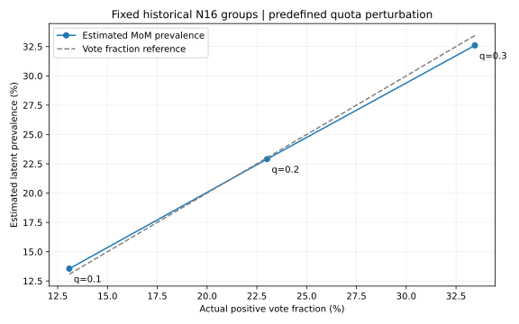
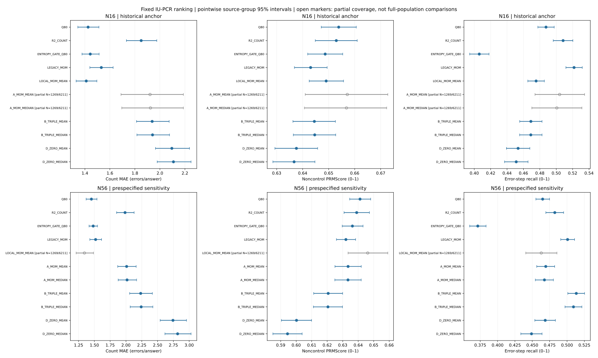
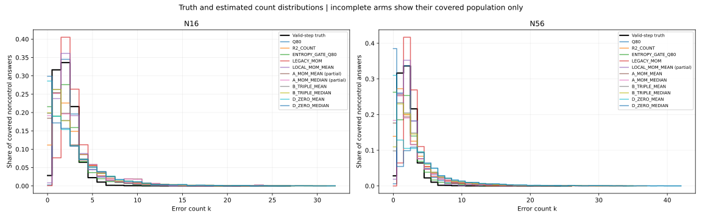
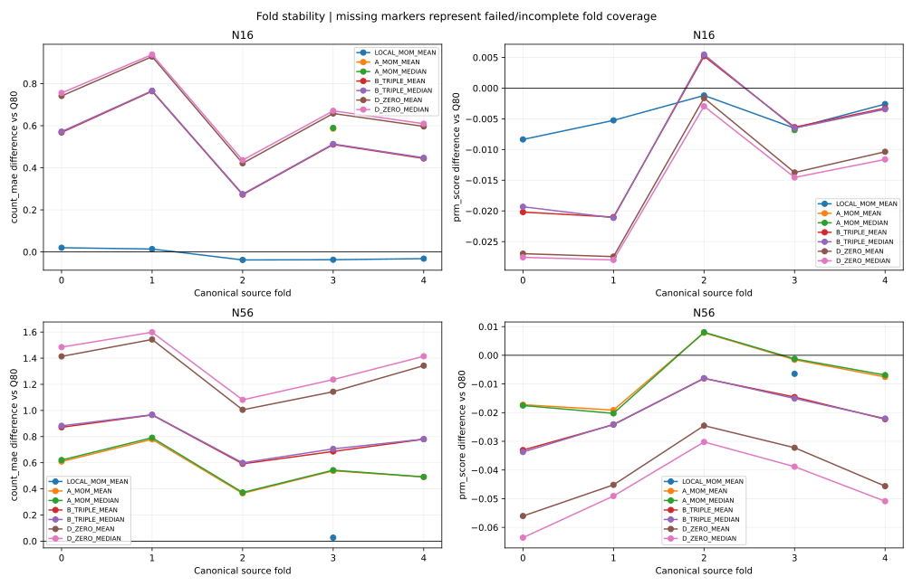

לא הוכח שיפור שעובר את הקריטריון המשולב במשפחה שנבדקה. הדירוג הראשי של IU-PCR קבוע בין זרועות הכמות. N16 הוא בנק ייחוס היסטורי; N56 הוא בקרת רגישות שנקבעה מראש.
הקרבה בין 22.905% של MoM לבין 23.016% הצבעות אינה מקרית בלבד במבחן הרגישות שנבדק: שינוי המכסה משנה כמעט במקביל את אומדן השכיחות. אין כאן זהות אלגברית או הוכחה שהמכסה מסבירה לבדה את הכשל.

| מכסה | הצבעה בפועל | MoM |
|---|---|---|
| 10% | 13.085% | 13.553% |
| 20% | 23.016% | 22.905% |
| 30% | 33.447% | 32.600% |
באותן מכסות בדיוק, ערבוב עצמאי בתוך תשובה הפיק אומדנים בטווח 8.67%–86.34%. לכן MoM תלוי גם בהסכמה ובמומנטים מסדר גבוה, והקרבה לשיעור ההצבעה אינה כלל מתמטי. הערבוב שומר גם מבנה תלוי אורך: covariance צפוי של 4·Var(ceil(q·n)/n).
אבחון נטרול נוסף קיבע סף אפס על ציוני הקבוצות המוחלטים, שמורכזים באימון: ABS_ZERO. הוא מסיר שיעור הצבעה כפוי, אך ממוצע האימון אינו גבול מובטח לשגיאה. הזרוע הוגדרה לפני צפייה בתוצאות חדשות ונשארת אבחון משני; אין בחירה של q=10% בעקבות קרבתו לשכיחות האמת.
| Bank | Diagnostic | N | MAE | PRMScore | Recall | Clean false flags |
|---|---|---|---|---|---|---|
| N16 | ABS_ZERO | 6211 | 4.5714 | 0.5367 | 0.7464 | 0.9288 |
| N56 | ABS_ZERO | 6211 | 4.3618 | 0.5384 | 0.7148 | 0.9063 |
רווחים מזווגים נקודתיים של 95% נמצאים בקובץ האבחון; הם אינם קריטריון ההצלחה המתוקן של שבע הזרועות הראשיות. ביטול המכסה לבדו לא זיהה את שיעור השגיאות הסמנטי בניסוי הזה.
Diagnostic protocol · All 590 training-only diagnostic rows · Diagnostic prediction seal · Exploratory evaluation and paired intervals · Independent-voter synthetic control
המשפחה שנבדקה אינה מספקת שיפור כמות שעובר את הקריטריון המשולב. שינוי עיגול לחציון כמעט שלא שינה את התוצאה; שלשה יציבה אינה מבטיחה posterior מכויל לשגיאות אמת; ורכיב תשובה נקייה שינה את ההקצאה במחיר MAE ו־recall. A ב־N16 נכשל בארבעה folds בגלל emissions לא־תקפים, והנקודות החלקיות שלו אינן תוצאה מלאה.
הניסוי הבא שהראיות מצדיקות הוא מודל של ראיות רציפות לפני ספי הצבעה, עם טיפול מפורש בתלות ובהטרוגניות בין תשובות. הוא צריך לבדוק שהמחלקה החבויה המוערכת תואמת לשגיאות המטרה, בלי prior שמוכנס מתוויות. לא הורץ כאן מודל כזה ולא הוכח שאמידת כמות בכלל אינה אפשרית.
Independent arithmetic audit · Numerical repair receipt · Chronological amendments
שיפור דורש ירידה ב־MAE מול Q80 ומול MoM הקודם, עלייה ב־PRMScore מול Q80, ורווח שמוציא אובדן recall של יותר מנקודת אחוז אחת. תיקון הבחירה בין שבע הזרועות משתמש ב־α=0.05/7 חד־צדדי. רווחים אחרים בדוח הם מזווגים, נקודתיים, של 95%.
6,211 תשובות noncontrol; 758 בקרות נקיות סינתטיות; 934 תשובות בלי שגיאה תקפה; 707 קבוצות מקור. 20,000 דגימות bootstrap של קבוצות מקור שלמות.
כיסוי חלקי: A ב־N16 ו־LOCAL_MOM ב־N56 מוגדרים רק ב־1,269 מתוך 6,211 noncontrols. סמנים חלולים מציינים אוכלוסייה חלקית; אין להשוות את נקודתם לתוצאת אוכלוסייה מלאה.

| זרוע | השערה | שינוי | תוצאה | מסקנה |
|---|---|---|---|---|
| LOCAL_MOM_MEAN | סף מוחלט ללא שינוי ייצוג | סף אימון גלובלי על ציון הקבוצה המקומי; MoM ותוחלת | MAE 1.4110; PRMScore 0.6490; recall 0.4755 | קריטריון השיפור המשולב לא עבר |
| A_MOM_MEAN | שימור מידע בין תשובות | ראיות לפני תקנון בתשובה, תקנון וסף מהאימון; MoM ותוחלת | MAE 1.9212; PRMScore 0.6572; recall 0.5042 | אין תוצאה מלאה בגלל כשל זרוע |
| A_MOM_MEDIAN | שינוי החלטת הכמות בלבד | אותו posterior של A; חציון התפלגות הכמות | MAE 1.9243; PRMScore 0.6568; recall 0.5008 | אין תוצאה מלאה בגלל כשל זרוע |
| B_TRIPLE_MEAN | עמידות של האמידה לתלות | שלשה יציבה אחת שנבחרה באימון ללא תוויות; posterior מהשלשה ותוחלת | MAE 1.9382; PRMScore 0.6445; recall 0.4691 | קריטריון השיפור המשולב לא עבר |
| B_TRIPLE_MEDIAN | שינוי החלטת הכמות בלבד | אותו posterior של B; חציון התפלגות הכמות | MAE 1.9411; PRMScore 0.6446; recall 0.4690 | קריטריון השיפור המשולב לא עבר |
| D_ZERO_MEAN | מצב נקי מפורש ברמת תשובה | מודל חבוי ברמת התשובה; תוחלת | MAE 2.0955; PRMScore 0.6376; recall 0.4535 | קריטריון השיפור המשולב לא עבר |
| D_ZERO_MEDIAN | שינוי החלטת הכמות בלבד | אותו posterior של D; חציון התפלגות הכמות | MAE 2.1084; PRMScore 0.6367; recall 0.4512 | קריטריון השיפור המשולב לא עבר |
| Arm | Count MAE | Bias | PRMScore | Recall | Precision | Error-answer misses | Partial Spearman | length | Coverage |
|---|---|---|---|---|---|---|---|---|
| LOCAL_MOM_MEAN | 1.4110 | 0.5294 | 0.6490 | 0.4755 | 0.3804 | 0.0086 | 0.0614 | 1.0000 |
| A_MOM_MEAN | 1.9212 | 0.5863 | 0.6572 | 0.5042 | 0.3934 | 0.1794 | 0.1914 | 0.2043 |
| A_MOM_MEDIAN | 1.9243 | 0.5658 | 0.6568 | 0.5008 | 0.3938 | 0.1867 | 0.1911 | 0.2043 |
| B_TRIPLE_MEAN | 1.9382 | 0.5452 | 0.6445 | 0.4691 | 0.3730 | 0.1907 | 0.1964 | 1.0000 |
| B_TRIPLE_MEDIAN | 1.9411 | 0.5426 | 0.6446 | 0.4690 | 0.3733 | 0.1922 | 0.1956 | 1.0000 |
| D_ZERO_MEAN | 2.0955 | 0.5231 | 0.6376 | 0.4535 | 0.3636 | 0.2769 | 0.1851 | 1.0000 |
| D_ZERO_MEDIAN | 2.1084 | 0.5180 | 0.6367 | 0.4512 | 0.3625 | 0.2898 | 0.1844 | 1.0000 |
| Q80 | 1.4257 | 0.5537 | 0.6539 | 0.4876 | 0.3865 | 0.0028 | 0.0703 | 1.0000 |
| R2_COUNT | 1.8503 | 0.7248 | 0.6529 | 0.5084 | 0.3787 | 0.1122 | 0.1530 | 1.0000 |
| ENTROPY_GATE_Q80 | 1.4431 | -0.0166 | 0.6487 | 0.4061 | 0.4093 | 0.1998 | 0.1905 | 1.0000 |
| LEGACY_MOM | 1.5315 | 0.9702 | 0.6431 | 0.5218 | 0.3578 | 0.0007 | 0.0209 | 1.0000 |
| D_PRIOR_MEAN | 1.9382 | 0.5452 | 0.6445 | 0.4691 | 0.3730 | 0.1907 | 0.1964 | 1.0000 |
| D_PRIOR_MEDIAN | 1.9411 | 0.5426 | 0.6446 | 0.4690 | 0.3733 | 0.1922 | 0.1956 | 1.0000 |


| Arm | N | Count MAE | False flags | Low 95% | High 95% |
|---|---|---|---|---|---|
| LOCAL_MOM_MEAN | 758.0000 | 2.8245 | 0.9868 | 0.9777 | 0.9947 |
| A_MOM_MEAN | 155.0000 | 1.0516 | 0.4129 | 0.3333 | 0.4939 |
| A_MOM_MEDIAN | 155.0000 | 1.0258 | 0.3935 | 0.3158 | 0.4745 |
| B_TRIPLE_MEAN | 758.0000 | 1.2230 | 0.4670 | 0.4308 | 0.5033 |
| B_TRIPLE_MEDIAN | 758.0000 | 1.2177 | 0.4657 | 0.4295 | 0.5020 |
| D_ZERO_MEAN | 758.0000 | 1.0501 | 0.2929 | 0.2596 | 0.3267 |
| D_ZERO_MEDIAN | 758.0000 | 1.0396 | 0.2731 | 0.2409 | 0.3059 |
| Q80 | 758.0000 | 2.9604 | 0.9934 | 0.9869 | 0.9987 |
| R2_COUNT | 758.0000 | 1.5580 | 0.5884 | 0.5522 | 0.6243 |
| ENTROPY_GATE_Q80 | 758.0000 | 1.8364 | 0.5884 | 0.5529 | 0.6235 |
| LEGACY_MOM | 758.0000 | 3.2573 | 0.9960 | 0.9908 | 1.0000 |
| D_PRIOR_MEAN | 758.0000 | 1.2230 | 0.4670 | 0.4308 | 0.5033 |
| D_PRIOR_MEDIAN | 758.0000 | 1.2177 | 0.4657 | 0.4295 | 0.5020 |
| Arm | N | Count MAE | False flags | Low 95% | High 95% |
|---|---|---|---|---|---|
| LOCAL_MOM_MEAN | 934.0000 | 2.8651 | 0.9893 | 0.9820 | 0.9957 |
| A_MOM_MEAN | 192.0000 | 1.2292 | 0.4583 | 0.3850 | 0.5330 |
| A_MOM_MEDIAN | 192.0000 | 1.2083 | 0.4427 | 0.3695 | 0.5179 |
| B_TRIPLE_MEAN | 934.0000 | 1.3458 | 0.4850 | 0.4504 | 0.5194 |
| B_TRIPLE_MEDIAN | 934.0000 | 1.3383 | 0.4829 | 0.4483 | 0.5172 |
| D_ZERO_MEAN | 934.0000 | 1.1895 | 0.3148 | 0.2828 | 0.3473 |
| D_ZERO_MEDIAN | 934.0000 | 1.1767 | 0.2955 | 0.2647 | 0.3272 |
| Q80 | 934.0000 | 2.9711 | 0.9946 | 0.9895 | 0.9989 |
| R2_COUNT | 934.0000 | 1.7966 | 0.6499 | 0.6195 | 0.6802 |
| ENTROPY_GATE_Q80 | 934.0000 | 1.6617 | 0.5214 | 0.4880 | 0.5552 |
| LEGACY_MOM | 934.0000 | 3.2762 | 0.9968 | 0.9925 | 1.0000 |
| D_PRIOR_MEAN | 934.0000 | 1.3458 | 0.4850 | 0.4504 | 0.5194 |
| D_PRIOR_MEDIAN | 934.0000 | 1.3383 | 0.4829 | 0.4483 | 0.5172 |
| Arm | N | Count MAE | False flags | Low 95% | High 95% |
|---|---|---|---|---|---|
| LOCAL_MOM_MEAN | 176.0000 | 3.0398 | 1.0000 | 1.0000 | 1.0000 |
| A_MOM_MEAN | 37.0000 | 1.9730 | 0.6486 | 0.4828 | 0.8000 |
| A_MOM_MEDIAN | 37.0000 | 1.9730 | 0.6486 | 0.4828 | 0.8000 |
| B_TRIPLE_MEAN | 176.0000 | 1.8750 | 0.5625 | 0.4859 | 0.6409 |
| B_TRIPLE_MEDIAN | 176.0000 | 1.8580 | 0.5568 | 0.4798 | 0.6347 |
| D_ZERO_MEAN | 176.0000 | 1.7898 | 0.4091 | 0.3350 | 0.4859 |
| D_ZERO_MEDIAN | 176.0000 | 1.7670 | 0.3920 | 0.3179 | 0.4679 |
| Q80 | 176.0000 | 3.0170 | 1.0000 | 1.0000 | 1.0000 |
| R2_COUNT | 176.0000 | 2.8239 | 0.9148 | 0.8727 | 0.9532 |
| ENTROPY_GATE_Q80 | 176.0000 | 0.9091 | 0.2330 | 0.1694 | 0.2989 |
| LEGACY_MOM | 176.0000 | 3.3580 | 1.0000 | 1.0000 | 1.0000 |
| D_PRIOR_MEAN | 176.0000 | 1.8750 | 0.5625 | 0.4859 | 0.6409 |
| D_PRIOR_MEDIAN | 176.0000 | 1.8580 | 0.5568 | 0.4798 | 0.6347 |
| Arm | Baseline | Metric | Difference | Lo 95% | Hi 95% | Adjusted lower | Adjusted upper | N |
|---|---|---|---|---|---|---|---|---|
| LOCAL_MOM_MEAN | Q80 | prm_score | -0.0048 | -0.0071 | -0.0025 | -0.0078 | -0.0019 | 6211.0000 |
| LOCAL_MOM_MEAN | Q80 | error_recall | -0.0121 | -0.0170 | -0.0072 | -0.0183 | -0.0058 | 6211.0000 |
| LOCAL_MOM_MEAN | Q80 | count_mae | -0.0147 | -0.0415 | 0.0117 | -0.0484 | 0.0186 | 6211.0000 |
| LOCAL_MOM_MEAN | Q80 | count_bias | -0.0243 | -0.0542 | 0.0054 | -0.0614 | 0.0125 | 6211.0000 |
| LOCAL_MOM_MEAN | Q80 | error_answer_miss_rate | 0.0058 | 0.0031 | 0.0086 | 0.0025 | 0.0094 | 6211.0000 |
| LOCAL_MOM_MEAN | Q80 | partial_spearman_length | -0.0089 | -0.0388 | 0.0211 | -0.0454 | 0.0285 | 6211.0000 |
| LOCAL_MOM_MEAN | LEGACY_MOM | prm_score | 0.0060 | 0.0036 | 0.0084 | 0.0030 | 0.0090 | 6211.0000 |
| LOCAL_MOM_MEAN | LEGACY_MOM | error_recall | -0.0463 | -0.0514 | -0.0413 | -0.0527 | -0.0400 | 6211.0000 |
| LOCAL_MOM_MEAN | LEGACY_MOM | count_mae | -0.1204 | -0.1505 | -0.0911 | -0.1581 | -0.0839 | 6211.0000 |
| LOCAL_MOM_MEAN | LEGACY_MOM | count_bias | -0.4408 | -0.4714 | -0.4107 | -0.4789 | -0.4036 | 6211.0000 |
| LOCAL_MOM_MEAN | LEGACY_MOM | error_answer_miss_rate | 0.0080 | 0.0053 | 0.0108 | 0.0047 | 0.0114 | 6211.0000 |
| LOCAL_MOM_MEAN | LEGACY_MOM | partial_spearman_length | 0.0405 | 0.0085 | 0.0725 | 0.0004 | 0.0803 | 6211.0000 |
| A_MOM_MEAN | Q80 | prm_score | -0.0065 | -0.0184 | 0.0048 | -0.0216 | 0.0075 | 1269.0000 |
| A_MOM_MEAN | Q80 | error_recall | 0.0038 | -0.0311 | 0.0399 | -0.0391 | 0.0488 | 1269.0000 |
| A_MOM_MEAN | Q80 | count_mae | 0.5863 | 0.3872 | 0.8107 | 0.3454 | 0.8750 | 1269.0000 |
| A_MOM_MEAN | Q80 | count_bias | 0.1151 | -0.1674 | 0.4209 | -0.2339 | 0.5031 | 1269.0000 |
| A_MOM_MEAN | Q80 | error_answer_miss_rate | 0.1786 | 0.1490 | 0.2098 | 0.1419 | 0.2177 | 1269.0000 |
| A_MOM_MEAN | LEGACY_MOM | prm_score | 0.0070 | -0.0051 | 0.0186 | -0.0082 | 0.0217 | 1269.0000 |
| A_MOM_MEAN | LEGACY_MOM | error_recall | -0.0238 | -0.0576 | 0.0108 | -0.0656 | 0.0198 | 1269.0000 |
| A_MOM_MEAN | LEGACY_MOM | count_mae | 0.5091 | 0.3082 | 0.7280 | 0.2590 | 0.7873 | 1269.0000 |
| A_MOM_MEAN | LEGACY_MOM | count_bias | -0.2695 | -0.5511 | 0.0352 | -0.6192 | 0.1099 | 1269.0000 |
| A_MOM_MEAN | LEGACY_MOM | error_answer_miss_rate | 0.1786 | 0.1486 | 0.2100 | 0.1416 | 0.2177 | 1269.0000 |
| A_MOM_MEDIAN | Q80 | prm_score | -0.0068 | -0.0186 | 0.0044 | -0.0218 | 0.0070 | 1269.0000 |
| A_MOM_MEDIAN | Q80 | error_recall | 0.0004 | -0.0346 | 0.0365 | -0.0431 | 0.0455 | 1269.0000 |
| A_MOM_MEDIAN | Q80 | count_mae | 0.5894 | 0.3927 | 0.8117 | 0.3496 | 0.8750 | 1269.0000 |
| A_MOM_MEDIAN | Q80 | count_bias | 0.0946 | -0.1879 | 0.4002 | -0.2553 | 0.4828 | 1269.0000 |
| A_MOM_MEDIAN | Q80 | error_answer_miss_rate | 0.1859 | 0.1564 | 0.2173 | 0.1490 | 0.2249 | 1269.0000 |
| A_MOM_MEDIAN | LEGACY_MOM | prm_score | 0.0066 | -0.0053 | 0.0182 | -0.0084 | 0.0212 | 1269.0000 |
| A_MOM_MEDIAN | LEGACY_MOM | error_recall | -0.0272 | -0.0611 | 0.0073 | -0.0695 | 0.0166 | 1269.0000 |
| A_MOM_MEDIAN | LEGACY_MOM | count_mae | 0.5122 | 0.3115 | 0.7299 | 0.2642 | 0.7879 | 1269.0000 |
| A_MOM_MEDIAN | LEGACY_MOM | count_bias | -0.2900 | -0.5722 | 0.0143 | -0.6400 | 0.0912 | 1269.0000 |
| A_MOM_MEDIAN | LEGACY_MOM | error_answer_miss_rate | 0.1859 | 0.1562 | 0.2175 | 0.1488 | 0.2250 | 1269.0000 |
| B_TRIPLE_MEAN | Q80 | prm_score | -0.0094 | -0.0158 | -0.0031 | -0.0176 | -0.0015 | 6211.0000 |
| B_TRIPLE_MEAN | Q80 | error_recall | -0.0185 | -0.0333 | -0.0034 | -0.0371 | 0.0006 | 6211.0000 |
| B_TRIPLE_MEAN | Q80 | count_mae | 0.5125 | 0.4098 | 0.6219 | 0.3850 | 0.6500 | 6211.0000 |
| B_TRIPLE_MEAN | Q80 | count_bias | -0.0085 | -0.1385 | 0.1275 | -0.1719 | 0.1639 | 6211.0000 |
| B_TRIPLE_MEAN | Q80 | error_answer_miss_rate | 0.1879 | 0.1731 | 0.2029 | 0.1695 | 0.2067 | 6211.0000 |
| B_TRIPLE_MEAN | Q80 | partial_spearman_length | 0.1261 | 0.0903 | 0.1622 | 0.0818 | 0.1712 | 6211.0000 |
| B_TRIPLE_MEAN | LEGACY_MOM | prm_score | 0.0014 | -0.0051 | 0.0076 | -0.0070 | 0.0091 | 6211.0000 |
| B_TRIPLE_MEAN | LEGACY_MOM | error_recall | -0.0527 | -0.0680 | -0.0375 | -0.0716 | -0.0335 | 6211.0000 |
| B_TRIPLE_MEAN | LEGACY_MOM | count_mae | 0.4067 | 0.3000 | 0.5185 | 0.2769 | 0.5483 | 6211.0000 |
| B_TRIPLE_MEAN | LEGACY_MOM | count_bias | -0.4251 | -0.5584 | -0.2857 | -0.5912 | -0.2469 | 6211.0000 |
| B_TRIPLE_MEAN | LEGACY_MOM | error_answer_miss_rate | 0.1901 | 0.1752 | 0.2052 | 0.1716 | 0.2089 | 6211.0000 |
| B_TRIPLE_MEAN | LEGACY_MOM | partial_spearman_length | 0.1755 | 0.1402 | 0.2112 | 0.1320 | 0.2208 | 6211.0000 |
| B_TRIPLE_MEDIAN | Q80 | prm_score | -0.0092 | -0.0157 | -0.0030 | -0.0175 | -0.0013 | 6211.0000 |
| B_TRIPLE_MEDIAN | Q80 | error_recall | -0.0186 | -0.0335 | -0.0034 | -0.0372 | 0.0006 | 6211.0000 |
| B_TRIPLE_MEDIAN | Q80 | count_mae | 0.5154 | 0.4127 | 0.6245 | 0.3876 | 0.6528 | 6211.0000 |
| B_TRIPLE_MEDIAN | Q80 | count_bias | -0.0111 | -0.1417 | 0.1249 | -0.1748 | 0.1620 | 6211.0000 |
| B_TRIPLE_MEDIAN | Q80 | error_answer_miss_rate | 0.1894 | 0.1745 | 0.2044 | 0.1710 | 0.2083 | 6211.0000 |
| B_TRIPLE_MEDIAN | Q80 | partial_spearman_length | 0.1253 | 0.0895 | 0.1613 | 0.0807 | 0.1705 | 6211.0000 |
| B_TRIPLE_MEDIAN | LEGACY_MOM | prm_score | 0.0016 | -0.0050 | 0.0078 | -0.0069 | 0.0093 | 6211.0000 |
| B_TRIPLE_MEDIAN | LEGACY_MOM | error_recall | -0.0528 | -0.0681 | -0.0375 | -0.0717 | -0.0334 | 6211.0000 |
| B_TRIPLE_MEDIAN | LEGACY_MOM | count_mae | 0.4096 | 0.3033 | 0.5217 | 0.2789 | 0.5518 | 6211.0000 |
| B_TRIPLE_MEDIAN | LEGACY_MOM | count_bias | -0.4276 | -0.5612 | -0.2881 | -0.5933 | -0.2488 | 6211.0000 |
| B_TRIPLE_MEDIAN | LEGACY_MOM | error_answer_miss_rate | 0.1915 | 0.1765 | 0.2067 | 0.1731 | 0.2105 | 6211.0000 |
| B_TRIPLE_MEDIAN | LEGACY_MOM | partial_spearman_length | 0.1747 | 0.1394 | 0.2105 | 0.1308 | 0.2200 | 6211.0000 |
| D_ZERO_MEAN | Q80 | prm_score | -0.0163 | -0.0230 | -0.0097 | -0.0248 | -0.0081 | 6211.0000 |
| D_ZERO_MEAN | Q80 | error_recall | -0.0341 | -0.0500 | -0.0178 | -0.0540 | -0.0136 | 6211.0000 |
| D_ZERO_MEAN | Q80 | count_mae | 0.6698 | 0.5655 | 0.7828 | 0.5399 | 0.8106 | 6211.0000 |
| D_ZERO_MEAN | Q80 | count_bias | -0.0306 | -0.1715 | 0.1173 | -0.2091 | 0.1542 | 6211.0000 |
| D_ZERO_MEAN | Q80 | error_answer_miss_rate | 0.2741 | 0.2578 | 0.2905 | 0.2539 | 0.2945 | 6211.0000 |
| D_ZERO_MEAN | Q80 | partial_spearman_length | 0.1148 | 0.0785 | 0.1515 | 0.0694 | 0.1604 | 6211.0000 |
| D_ZERO_MEAN | LEGACY_MOM | prm_score | -0.0055 | -0.0123 | 0.0011 | -0.0141 | 0.0027 | 6211.0000 |
| D_ZERO_MEAN | LEGACY_MOM | error_recall | -0.0683 | -0.0844 | -0.0520 | -0.0886 | -0.0476 | 6211.0000 |
| D_ZERO_MEAN | LEGACY_MOM | count_mae | 0.5640 | 0.4566 | 0.6777 | 0.4324 | 0.7070 | 6211.0000 |
| D_ZERO_MEAN | LEGACY_MOM | count_bias | -0.4471 | -0.5912 | -0.2965 | -0.6266 | -0.2568 | 6211.0000 |
| D_ZERO_MEAN | LEGACY_MOM | error_answer_miss_rate | 0.2762 | 0.2599 | 0.2928 | 0.2560 | 0.2971 | 6211.0000 |
| D_ZERO_MEAN | LEGACY_MOM | partial_spearman_length | 0.1642 | 0.1281 | 0.2004 | 0.1192 | 0.2100 | 6211.0000 |
| D_ZERO_MEDIAN | Q80 | prm_score | -0.0171 | -0.0238 | -0.0105 | -0.0256 | -0.0089 | 6211.0000 |
| D_ZERO_MEDIAN | Q80 | error_recall | -0.0364 | -0.0525 | -0.0200 | -0.0564 | -0.0158 | 6211.0000 |
| D_ZERO_MEDIAN | Q80 | count_mae | 0.6827 | 0.5788 | 0.7946 | 0.5545 | 0.8232 | 6211.0000 |
| D_ZERO_MEDIAN | Q80 | count_bias | -0.0357 | -0.1778 | 0.1129 | -0.2140 | 0.1493 | 6211.0000 |
| D_ZERO_MEDIAN | Q80 | error_answer_miss_rate | 0.2870 | 0.2706 | 0.3037 | 0.2665 | 0.3080 | 6211.0000 |
| D_ZERO_MEDIAN | Q80 | partial_spearman_length | 0.1141 | 0.0779 | 0.1506 | 0.0686 | 0.1598 | 6211.0000 |
| D_ZERO_MEDIAN | LEGACY_MOM | prm_score | -0.0064 | -0.0131 | 0.0001 | -0.0150 | 0.0018 | 6211.0000 |
| D_ZERO_MEDIAN | LEGACY_MOM | error_recall | -0.0706 | -0.0870 | -0.0541 | -0.0911 | -0.0499 | 6211.0000 |
| D_ZERO_MEDIAN | LEGACY_MOM | count_mae | 0.5769 | 0.4700 | 0.6898 | 0.4456 | 0.7188 | 6211.0000 |
| D_ZERO_MEDIAN | LEGACY_MOM | count_bias | -0.4523 | -0.5967 | -0.3017 | -0.6311 | -0.2622 | 6211.0000 |
| D_ZERO_MEDIAN | LEGACY_MOM | error_answer_miss_rate | 0.2891 | 0.2726 | 0.3062 | 0.2686 | 0.3102 | 6211.0000 |
| D_ZERO_MEDIAN | LEGACY_MOM | partial_spearman_length | 0.1635 | 0.1273 | 0.1998 | 0.1182 | 0.2095 | 6211.0000 |
| Bank | Arm | Population | Fold | N | MAE | Bias | PRMScore | Recall | Coverage |
|---|---|---|---|---|---|---|---|---|---|
| N56 | LOCAL_MOM_MEAN | ALL_NONCONTROL | undefined | 1269.0000 | 1.3436 | 0.4295 | 0.6461 | 0.4629 | 0.2043 |
| N56 | A_MOM_MEAN | ALL_NONCONTROL | undefined | 6211.0000 | 2.0108 | 0.7102 | 0.6335 | 0.4694 | 1.0000 |
| N56 | A_MOM_MEDIAN | ALL_NONCONTROL | undefined | 6211.0000 | 2.0177 | 0.6962 | 0.6334 | 0.4675 | 1.0000 |
| N56 | B_TRIPLE_MEAN | ALL_NONCONTROL | undefined | 6211.0000 | 2.2330 | 1.2505 | 0.6207 | 0.5133 | 1.0000 |
| N56 | B_TRIPLE_MEDIAN | ALL_NONCONTROL | undefined | 6211.0000 | 2.2412 | 1.2220 | 0.6205 | 0.5093 | 1.0000 |
| N56 | D_ZERO_MEAN | ALL_NONCONTROL | undefined | 6211.0000 | 2.7438 | 1.2298 | 0.6002 | 0.4686 | 1.0000 |
| N56 | D_ZERO_MEDIAN | ALL_NONCONTROL | undefined | 6211.0000 | 2.8174 | 1.1655 | 0.5944 | 0.4489 | 1.0000 |
| N56 | Q80 | ALL_NONCONTROL | undefined | 6211.0000 | 1.4536 | 0.5606 | 0.6412 | 0.4649 | 1.0000 |
| N56 | R2_COUNT | ALL_NONCONTROL | undefined | 6211.0000 | 1.9858 | 0.7294 | 0.6390 | 0.4824 | 1.0000 |
| N56 | ENTROPY_GATE_Q80 | ALL_NONCONTROL | undefined | 6211.0000 | 1.4819 | -0.1340 | 0.6363 | 0.3715 | 1.0000 |
| N56 | LEGACY_MOM | ALL_NONCONTROL | undefined | 6211.0000 | 1.5202 | 0.9763 | 0.6321 | 0.5008 | 1.0000 |
| N56 | D_PRIOR_MEAN | ALL_NONCONTROL | undefined | 6211.0000 | 2.2330 | 1.2505 | 0.6207 | 0.5133 | 1.0000 |
| N56 | D_PRIOR_MEDIAN | ALL_NONCONTROL | undefined | 6211.0000 | 2.2412 | 1.2220 | 0.6205 | 0.5093 | 1.0000 |
| Bank | Arm | Population | Fold | N | MAE | Bias | PRMScore | Recall | Coverage |
|---|---|---|---|---|---|---|---|---|---|
| N16 | LOCAL_MOM_MEAN | ALL_NONCONTROL | undefined | 6211.0000 | 1.4110 | 0.5294 | 0.6485 | 0.4745 | 1.0000 |
| N16 | A_MOM_MEAN | ALL_NONCONTROL | undefined | 1269.0000 | 1.9212 | 0.5863 | 0.6580 | 0.5057 | 0.2043 |
| N16 | A_MOM_MEDIAN | ALL_NONCONTROL | undefined | 1269.0000 | 1.9243 | 0.5658 | 0.6583 | 0.5034 | 0.2043 |
| N16 | B_TRIPLE_MEAN | ALL_NONCONTROL | undefined | 6211.0000 | 1.9382 | 0.5452 | 0.6443 | 0.4686 | 1.0000 |
| N16 | B_TRIPLE_MEDIAN | ALL_NONCONTROL | undefined | 6211.0000 | 1.9411 | 0.5426 | 0.6446 | 0.4689 | 1.0000 |
| N16 | D_ZERO_MEAN | ALL_NONCONTROL | undefined | 6211.0000 | 2.0955 | 0.5231 | 0.6374 | 0.4532 | 1.0000 |
| N16 | D_ZERO_MEDIAN | ALL_NONCONTROL | undefined | 6211.0000 | 2.1084 | 0.5180 | 0.6362 | 0.4502 | 1.0000 |
| N16 | Q80 | ALL_NONCONTROL | undefined | 6211.0000 | 1.4291 | 0.5542 | 0.6539 | 0.4876 | 1.0000 |
| N16 | R2_COUNT | ALL_NONCONTROL | undefined | 6211.0000 | 1.8503 | 0.7248 | 0.6535 | 0.5095 | 1.0000 |
| N16 | ENTROPY_GATE_Q80 | ALL_NONCONTROL | undefined | 6211.0000 | 1.4450 | -0.0333 | 0.6487 | 0.4041 | 1.0000 |
| N16 | LEGACY_MOM | ALL_NONCONTROL | undefined | 6211.0000 | 1.5315 | 0.9702 | 0.6421 | 0.5198 | 1.0000 |
| N16 | D_PRIOR_MEAN | ALL_NONCONTROL | undefined | 6211.0000 | 1.9382 | 0.5452 | 0.6443 | 0.4686 | 1.0000 |
| N16 | D_PRIOR_MEDIAN | ALL_NONCONTROL | undefined | 6211.0000 | 1.9411 | 0.5426 | 0.6446 | 0.4689 | 1.0000 |
| N56 | LOCAL_MOM_MEAN | ALL_NONCONTROL | undefined | 1269.0000 | 1.3436 | 0.4295 | 0.6407 | 0.4531 | 0.2043 |
| N56 | A_MOM_MEAN | ALL_NONCONTROL | undefined | 6211.0000 | 2.0108 | 0.7102 | 0.6367 | 0.4755 | 1.0000 |
| N56 | A_MOM_MEDIAN | ALL_NONCONTROL | undefined | 6211.0000 | 2.0177 | 0.6962 | 0.6369 | 0.4741 | 1.0000 |
| N56 | B_TRIPLE_MEAN | ALL_NONCONTROL | undefined | 6211.0000 | 2.2330 | 1.2505 | 0.6236 | 0.5195 | 1.0000 |
| N56 | B_TRIPLE_MEDIAN | ALL_NONCONTROL | undefined | 6211.0000 | 2.2412 | 1.2220 | 0.6233 | 0.5152 | 1.0000 |
| N56 | D_ZERO_MEAN | ALL_NONCONTROL | undefined | 6211.0000 | 2.7438 | 1.2298 | 0.6037 | 0.4759 | 1.0000 |
| N56 | D_ZERO_MEDIAN | ALL_NONCONTROL | undefined | 6211.0000 | 2.8174 | 1.1655 | 0.5977 | 0.4555 | 1.0000 |
| N56 | Q80 | ALL_NONCONTROL | undefined | 6211.0000 | 1.4592 | 0.5563 | 0.6410 | 0.4640 | 1.0000 |
| N56 | R2_COUNT | ALL_NONCONTROL | undefined | 6211.0000 | 1.9858 | 0.7294 | 0.6365 | 0.4776 | 1.0000 |
| N56 | ENTROPY_GATE_Q80 | ALL_NONCONTROL | undefined | 6211.0000 | 1.4851 | -0.1407 | 0.6359 | 0.3701 | 1.0000 |
| N56 | LEGACY_MOM | ALL_NONCONTROL | undefined | 6211.0000 | 1.5202 | 0.9763 | 0.6337 | 0.5040 | 1.0000 |
| N56 | D_PRIOR_MEAN | ALL_NONCONTROL | undefined | 6211.0000 | 2.2330 | 1.2505 | 0.6236 | 0.5195 | 1.0000 |
| N56 | D_PRIOR_MEDIAN | ALL_NONCONTROL | undefined | 6211.0000 | 2.2412 | 1.2220 | 0.6233 | 0.5152 | 1.0000 |
| Bank | Arm | Population | Fold | N | MAE | Bias | PRMScore | Recall | Coverage |
|---|---|---|---|---|---|---|---|---|---|
| N16 | LOCAL_MOM_MEAN | redundency | undefined | 758.0000 | 1.3997 | 0.9776 | 0.6922 | 0.6025 | 1.0000 |
| N16 | LOCAL_MOM_MEAN | circular | undefined | 758.0000 | 1.1887 | -0.6451 | 0.6687 | 0.4407 | 1.0000 |
| N16 | LOCAL_MOM_MEAN | counterfactual | undefined | 757.0000 | 1.4703 | -0.0277 | 0.6441 | 0.4262 | 1.0000 |
| N16 | LOCAL_MOM_MEAN | step_contradiction | undefined | 758.0000 | 1.4525 | 1.1491 | 0.6654 | 0.5898 | 1.0000 |
| N16 | LOCAL_MOM_MEAN | domain_inconsistency | undefined | 757.0000 | 1.3118 | 0.8177 | 0.6715 | 0.5553 | 1.0000 |
| N16 | LOCAL_MOM_MEAN | confidence | undefined | 757.0000 | 1.3752 | 0.9260 | 0.6784 | 0.5782 | 1.0000 |
| N16 | LOCAL_MOM_MEAN | missing_condition | undefined | 756.0000 | 1.3862 | 0.0688 | 0.5961 | 0.3563 | 1.0000 |
| N16 | LOCAL_MOM_MEAN | deception | undefined | 750.0000 | 1.3947 | 0.4720 | 0.5934 | 0.3735 | 1.0000 |
| N16 | LOCAL_MOM_MEAN | multi_solutions | undefined | 160.0000 | 2.8750 | 2.8750 | 0.8856 | undefined | 1.0000 |
| N16 | LOCAL_MOM_MEAN | simplicity | undefined | undefined | undefined | undefined | 0.6804 | undefined | undefined |
| N16 | LOCAL_MOM_MEAN | soundness | undefined | undefined | undefined | undefined | 0.6648 | undefined | undefined |
| N16 | LOCAL_MOM_MEAN | sensitivity | undefined | undefined | undefined | undefined | 0.6917 | undefined | undefined |
| N16 | A_MOM_MEAN | redundency | undefined | 155.0000 | 1.7355 | 0.4710 | 0.6707 | 0.4949 | 0.2045 |
| N16 | A_MOM_MEAN | circular | undefined | 155.0000 | 1.7226 | 0.4323 | 0.6844 | 0.6005 | 0.2045 |
| N16 | A_MOM_MEAN | counterfactual | undefined | 155.0000 | 2.0645 | -0.3226 | 0.6481 | 0.4057 | 0.2048 |
| N16 | A_MOM_MEAN | step_contradiction | undefined | 155.0000 | 1.7613 | 1.0774 | 0.6696 | 0.5946 | 0.2045 |
| N16 | A_MOM_MEAN | domain_inconsistency | undefined | 154.0000 | 2.1623 | 1.5390 | 0.6583 | 0.6603 | 0.2034 |
| N16 | A_MOM_MEAN | confidence | undefined | 154.0000 | 1.5779 | 0.7597 | 0.6790 | 0.5615 | 0.2034 |
| N16 | A_MOM_MEAN | missing_condition | undefined | 154.0000 | 2.4610 | 0.8247 | 0.6052 | 0.4588 | 0.2037 |
| N16 | A_MOM_MEAN | deception | undefined | 153.0000 | 1.9020 | -0.3725 | 0.6205 | 0.3407 | 0.2040 |
| N16 | A_MOM_MEAN | multi_solutions | undefined | 34.0000 | 1.8529 | 1.8529 | 0.9379 | undefined | 0.2125 |
| N16 | A_MOM_MEAN | simplicity | undefined | undefined | undefined | undefined | 0.6776 | undefined | undefined |
| N16 | A_MOM_MEAN | soundness | undefined | undefined | undefined | undefined | 0.6637 | undefined | undefined |
| N16 | A_MOM_MEAN | sensitivity | undefined | undefined | undefined | undefined | 0.7212 | undefined | undefined |
| N16 | A_MOM_MEDIAN | redundency | undefined | 155.0000 | 1.7419 | 0.4258 | 0.6687 | 0.4848 | 0.2045 |
| N16 | A_MOM_MEDIAN | circular | undefined | 155.0000 | 1.7355 | 0.4065 | 0.6836 | 0.5958 | 0.2045 |
| N16 | A_MOM_MEDIAN | counterfactual | undefined | 155.0000 | 2.0710 | -0.3290 | 0.6485 | 0.4057 | 0.2048 |
| N16 | A_MOM_MEDIAN | step_contradiction | undefined | 155.0000 | 1.7548 | 1.0581 | 0.6693 | 0.5907 | 0.2045 |
| N16 | A_MOM_MEDIAN | domain_inconsistency | undefined | 154.0000 | 2.1558 | 1.5065 | 0.6591 | 0.6565 | 0.2034 |
| N16 | A_MOM_MEDIAN | confidence | undefined | 154.0000 | 1.5714 | 0.7403 | 0.6767 | 0.5533 | 0.2034 |
| N16 | A_MOM_MEDIAN | missing_condition | undefined | 154.0000 | 2.4740 | 0.8247 | 0.6067 | 0.4615 | 0.2037 |
| N16 | A_MOM_MEDIAN | deception | undefined | 153.0000 | 1.9085 | -0.3922 | 0.6200 | 0.3380 | 0.2040 |
| N16 | A_MOM_MEDIAN | multi_solutions | undefined | 34.0000 | 1.8529 | 1.8529 | 0.9379 | undefined | 0.2125 |
| N16 | A_MOM_MEDIAN | simplicity | undefined | undefined | undefined | undefined | 0.6762 | undefined | undefined |
| N16 | A_MOM_MEDIAN | soundness | undefined | undefined | undefined | undefined | 0.6634 | undefined | undefined |
| N16 | A_MOM_MEDIAN | sensitivity | undefined | undefined | undefined | undefined | 0.7216 | undefined | undefined |
| N16 | B_TRIPLE_MEAN | redundency | undefined | 758.0000 | 1.7137 | 0.5000 | 0.6627 | 0.4782 | 1.0000 |
| N16 | B_TRIPLE_MEAN | circular | undefined | 758.0000 | 1.8470 | 0.2032 | 0.6677 | 0.5424 | 1.0000 |
| N16 | B_TRIPLE_MEAN | counterfactual | undefined | 757.0000 | 2.0608 | -0.3276 | 0.6386 | 0.3872 | 1.0000 |
| N16 | B_TRIPLE_MEAN | step_contradiction | undefined | 758.0000 | 1.7441 | 0.9314 | 0.6478 | 0.5143 | 1.0000 |
| N16 | B_TRIPLE_MEAN | domain_inconsistency | undefined | 757.0000 | 2.1083 | 1.5297 | 0.6576 | 0.6390 | 1.0000 |
| N16 | B_TRIPLE_MEAN | confidence | undefined | 757.0000 | 1.6882 | 0.6684 | 0.6669 | 0.5138 | 1.0000 |
| N16 | B_TRIPLE_MEAN | missing_condition | undefined | 756.0000 | 2.4180 | 0.7328 | 0.6026 | 0.4393 | 1.0000 |
| N16 | B_TRIPLE_MEAN | deception | undefined | 750.0000 | 2.0107 | -0.0933 | 0.5855 | 0.3018 | 1.0000 |
| N16 | B_TRIPLE_MEAN | multi_solutions | undefined | 160.0000 | 1.5437 | 1.5437 | 0.9417 | undefined | 1.0000 |
| N16 | B_TRIPLE_MEAN | simplicity | undefined | undefined | undefined | undefined | 0.6652 | undefined | undefined |
| N16 | B_TRIPLE_MEAN | soundness | undefined | undefined | undefined | undefined | 0.6527 | undefined | undefined |
| N16 | B_TRIPLE_MEAN | sensitivity | undefined | undefined | undefined | undefined | 0.7099 | undefined | undefined |
| N16 | B_TRIPLE_MEDIAN | redundency | undefined | 758.0000 | 1.7137 | 0.4947 | 0.6631 | 0.4782 | 1.0000 |
| N16 | B_TRIPLE_MEDIAN | circular | undefined | 758.0000 | 1.8509 | 0.1966 | 0.6679 | 0.5419 | 1.0000 |
| N16 | B_TRIPLE_MEDIAN | counterfactual | undefined | 757.0000 | 2.0634 | -0.3276 | 0.6386 | 0.3872 | 1.0000 |
| N16 | B_TRIPLE_MEDIAN | step_contradiction | undefined | 758.0000 | 1.7480 | 0.9274 | 0.6470 | 0.5117 | 1.0000 |
| N16 | B_TRIPLE_MEDIAN | domain_inconsistency | undefined | 757.0000 | 2.1149 | 1.5363 | 0.6581 | 0.6413 | 1.0000 |
| N16 | B_TRIPLE_MEDIAN | confidence | undefined | 757.0000 | 1.6909 | 0.6631 | 0.6669 | 0.5130 | 1.0000 |
| N16 | B_TRIPLE_MEDIAN | missing_condition | undefined | 756.0000 | 2.4246 | 0.7315 | 0.6026 | 0.4393 | 1.0000 |
| N16 | B_TRIPLE_MEDIAN | deception | undefined | 750.0000 | 2.0120 | -0.0947 | 0.5860 | 0.3024 | 1.0000 |
| N16 | B_TRIPLE_MEDIAN | multi_solutions | undefined | 160.0000 | 1.5250 | 1.5250 | 0.9424 | undefined | 1.0000 |
| N16 | B_TRIPLE_MEDIAN | simplicity | undefined | undefined | undefined | undefined | 0.6655 | undefined | undefined |
| N16 | B_TRIPLE_MEDIAN | soundness | undefined | undefined | undefined | undefined | 0.6527 | undefined | undefined |
| N16 | B_TRIPLE_MEDIAN | sensitivity | undefined | undefined | undefined | undefined | 0.7103 | undefined | undefined |
| N16 | D_ZERO_MEAN | redundency | undefined | 758.0000 | 1.9472 | 0.4195 | 0.6475 | 0.4392 | 1.0000 |
| N16 | D_ZERO_MEAN | circular | undefined | 758.0000 | 1.9683 | 0.2164 | 0.6609 | 0.5340 | 1.0000 |
| N16 | D_ZERO_MEAN | counterfactual | undefined | 757.0000 | 2.2246 | -0.3725 | 0.6330 | 0.3742 | 1.0000 |
| N16 | D_ZERO_MEAN | step_contradiction | undefined | 758.0000 | 1.8865 | 0.9499 | 0.6409 | 0.5017 | 1.0000 |
| N16 | D_ZERO_MEAN | domain_inconsistency | undefined | 757.0000 | 2.2668 | 1.5878 | 0.6506 | 0.6323 | 1.0000 |
| N16 | D_ZERO_MEAN | confidence | undefined | 757.0000 | 1.8230 | 0.6499 | 0.6581 | 0.4931 | 1.0000 |
| N16 | D_ZERO_MEAN | missing_condition | undefined | 756.0000 | 2.5847 | 0.7328 | 0.5984 | 0.4318 | 1.0000 |
| N16 | D_ZERO_MEAN | deception | undefined | 750.0000 | 2.2027 | -0.2000 | 0.5792 | 0.2812 | 1.0000 |
| N16 | D_ZERO_MEAN | multi_solutions | undefined | 160.0000 | 1.4438 | 1.4438 | 0.9457 | undefined | 1.0000 |
| N16 | D_ZERO_MEAN | simplicity | undefined | undefined | undefined | undefined | 0.6542 | undefined | undefined |
| N16 | D_ZERO_MEAN | soundness | undefined | undefined | undefined | undefined | 0.6457 | undefined | undefined |
| N16 | D_ZERO_MEAN | sensitivity | undefined | undefined | undefined | undefined | 0.7077 | undefined | undefined |
| N16 | D_ZERO_MEDIAN | redundency | undefined | 758.0000 | 1.9789 | 0.4195 | 0.6441 | 0.4327 | 1.0000 |
| N16 | D_ZERO_MEDIAN | circular | undefined | 758.0000 | 1.9815 | 0.2164 | 0.6602 | 0.5330 | 1.0000 |
| N16 | D_ZERO_MEDIAN | counterfactual | undefined | 757.0000 | 2.2325 | -0.3778 | 0.6334 | 0.3742 | 1.0000 |
| N16 | D_ZERO_MEDIAN | step_contradiction | undefined | 758.0000 | 1.8879 | 0.9354 | 0.6404 | 0.4983 | 1.0000 |
| N16 | D_ZERO_MEDIAN | domain_inconsistency | undefined | 757.0000 | 2.2880 | 1.5852 | 0.6486 | 0.6271 | 1.0000 |
| N16 | D_ZERO_MEDIAN | confidence | undefined | 757.0000 | 1.8375 | 0.6407 | 0.6580 | 0.4916 | 1.0000 |
| N16 | D_ZERO_MEDIAN | missing_condition | undefined | 756.0000 | 2.5899 | 0.7275 | 0.5987 | 0.4318 | 1.0000 |
| N16 | D_ZERO_MEDIAN | deception | undefined | 750.0000 | 2.2173 | -0.2013 | 0.5774 | 0.2782 | 1.0000 |
| N16 | D_ZERO_MEDIAN | multi_solutions | undefined | 160.0000 | 1.4250 | 1.4250 | 0.9464 | undefined | 1.0000 |
| N16 | D_ZERO_MEDIAN | simplicity | undefined | undefined | undefined | undefined | 0.6522 | undefined | undefined |
| N16 | D_ZERO_MEDIAN | soundness | undefined | undefined | undefined | undefined | 0.6451 | undefined | undefined |
| N16 | D_ZERO_MEDIAN | sensitivity | undefined | undefined | undefined | undefined | 0.7075 | undefined | undefined |
| N16 | Q80 | redundency | undefined | 758.0000 | 1.4459 | 1.0079 | 0.6975 | 0.6181 | 1.0000 |
| N16 | Q80 | circular | undefined | 758.0000 | 1.1557 | -0.6148 | 0.6793 | 0.4585 | 1.0000 |
| N16 | Q80 | counterfactual | undefined | 757.0000 | 1.5178 | -0.0198 | 0.6430 | 0.4253 | 1.0000 |
| N16 | Q80 | step_contradiction | undefined | 758.0000 | 1.4433 | 1.1293 | 0.6723 | 0.6023 | 1.0000 |
| N16 | Q80 | domain_inconsistency | undefined | 757.0000 | 1.3778 | 0.8679 | 0.6717 | 0.5635 | 1.0000 |
| N16 | Q80 | confidence | undefined | 757.0000 | 1.3540 | 0.8838 | 0.6855 | 0.5867 | 1.0000 |
| N16 | Q80 | missing_condition | undefined | 756.0000 | 1.3915 | 0.1720 | 0.6032 | 0.3788 | 1.0000 |
| N16 | Q80 | deception | undefined | 750.0000 | 1.4173 | 0.5160 | 0.5972 | 0.3853 | 1.0000 |
| N16 | Q80 | multi_solutions | undefined | 160.0000 | 2.8563 | 2.8563 | 0.8865 | undefined | 1.0000 |
| N16 | Q80 | simplicity | undefined | undefined | undefined | undefined | 0.6884 | undefined | undefined |
| N16 | Q80 | soundness | undefined | undefined | undefined | undefined | 0.6681 | undefined | undefined |
| N16 | Q80 | sensitivity | undefined | undefined | undefined | undefined | 0.6956 | undefined | undefined |
| N16 | R2_COUNT | redundency | undefined | 758.0000 | 1.7388 | 0.6834 | 0.6710 | 0.5185 | 1.0000 |
| N16 | R2_COUNT | circular | undefined | 758.0000 | 1.5488 | 0.2164 | 0.6917 | 0.5799 | 1.0000 |
| N16 | R2_COUNT | counterfactual | undefined | 757.0000 | 1.9155 | -0.0766 | 0.6461 | 0.4243 | 1.0000 |
| N16 | R2_COUNT | step_contradiction | undefined | 758.0000 | 1.7137 | 1.2045 | 0.6632 | 0.5940 | 1.0000 |
| N16 | R2_COUNT | domain_inconsistency | undefined | 757.0000 | 2.0264 | 1.5509 | 0.6654 | 0.6607 | 1.0000 |
| N16 | R2_COUNT | confidence | undefined | 757.0000 | 1.7028 | 0.9419 | 0.6718 | 0.5667 | 1.0000 |
| N16 | R2_COUNT | missing_condition | undefined | 756.0000 | 2.1680 | 0.7765 | 0.6087 | 0.4553 | 1.0000 |
| N16 | R2_COUNT | deception | undefined | 750.0000 | 1.8440 | 0.1133 | 0.5994 | 0.3459 | 1.0000 |
| N16 | R2_COUNT | multi_solutions | undefined | 160.0000 | 2.5375 | 2.5375 | 0.9004 | undefined | 1.0000 |
| N16 | R2_COUNT | simplicity | undefined | undefined | undefined | undefined | 0.6814 | undefined | undefined |
| N16 | R2_COUNT | soundness | undefined | undefined | undefined | undefined | 0.6616 | undefined | undefined |
| N16 | R2_COUNT | sensitivity | undefined | undefined | undefined | undefined | 0.7028 | undefined | undefined |
| N16 | ENTROPY_GATE_Q80 | redundency | undefined | 758.0000 | 1.4855 | 0.3826 | 0.6844 | 0.5036 | 1.0000 |
| N16 | ENTROPY_GATE_Q80 | circular | undefined | 758.0000 | 1.2533 | -0.7784 | 0.6687 | 0.4253 | 1.0000 |
| N16 | ENTROPY_GATE_Q80 | counterfactual | undefined | 757.0000 | 1.6711 | -0.6011 | 0.6297 | 0.3472 | 1.0000 |
| N16 | ENTROPY_GATE_Q80 | step_contradiction | undefined | 758.0000 | 1.3602 | 0.5475 | 0.6684 | 0.4966 | 1.0000 |
| N16 | ENTROPY_GATE_Q80 | domain_inconsistency | undefined | 757.0000 | 1.3672 | 0.5509 | 0.6673 | 0.5052 | 1.0000 |
| N16 | ENTROPY_GATE_Q80 | confidence | undefined | 757.0000 | 1.3937 | 0.2470 | 0.6733 | 0.4624 | 1.0000 |
| N16 | ENTROPY_GATE_Q80 | missing_condition | undefined | 756.0000 | 1.5450 | -0.3915 | 0.5998 | 0.3157 | 1.0000 |
| N16 | ENTROPY_GATE_Q80 | deception | undefined | 750.0000 | 1.6413 | -0.2307 | 0.5806 | 0.2806 | 1.0000 |
| N16 | ENTROPY_GATE_Q80 | multi_solutions | undefined | 160.0000 | 0.6375 | 0.6375 | 0.9767 | undefined | 1.0000 |
| N16 | ENTROPY_GATE_Q80 | simplicity | undefined | undefined | undefined | undefined | 0.6765 | undefined | undefined |
| N16 | ENTROPY_GATE_Q80 | soundness | undefined | undefined | undefined | undefined | 0.6597 | undefined | undefined |
| N16 | ENTROPY_GATE_Q80 | sensitivity | undefined | undefined | undefined | undefined | 0.7190 | undefined | undefined |
| N16 | LEGACY_MOM | redundency | undefined | 758.0000 | 1.6398 | 1.4235 | 0.6808 | 0.6428 | 1.0000 |
| N16 | LEGACY_MOM | circular | undefined | 758.0000 | 0.9710 | -0.3061 | 0.6828 | 0.5007 | 1.0000 |
| N16 | LEGACY_MOM | counterfactual | undefined | 757.0000 | 1.4491 | 0.4188 | 0.6387 | 0.4643 | 1.0000 |
| N16 | LEGACY_MOM | step_contradiction | undefined | 758.0000 | 1.8140 | 1.6504 | 0.6473 | 0.6309 | 1.0000 |
| N16 | LEGACY_MOM | domain_inconsistency | undefined | 757.0000 | 1.5773 | 1.2893 | 0.6622 | 0.6106 | 1.0000 |
| N16 | LEGACY_MOM | confidence | undefined | 757.0000 | 1.6922 | 1.5020 | 0.6577 | 0.6242 | 1.0000 |
| N16 | LEGACY_MOM | missing_condition | undefined | 756.0000 | 1.3267 | 0.4907 | 0.5984 | 0.4050 | 1.0000 |
| N16 | LEGACY_MOM | deception | undefined | 750.0000 | 1.4307 | 0.8227 | 0.5934 | 0.4124 | 1.0000 |
| N16 | LEGACY_MOM | multi_solutions | undefined | 160.0000 | 3.1875 | 3.1875 | 0.8716 | undefined | 1.0000 |
| N16 | LEGACY_MOM | simplicity | undefined | undefined | undefined | undefined | 0.6818 | undefined | undefined |
| N16 | LEGACY_MOM | soundness | undefined | undefined | undefined | undefined | 0.6515 | undefined | undefined |
| N16 | LEGACY_MOM | sensitivity | undefined | undefined | undefined | undefined | 0.6878 | undefined | undefined |
| N16 | D_PRIOR_MEAN | redundency | undefined | 758.0000 | 1.7137 | 0.5000 | 0.6627 | 0.4782 | 1.0000 |
| N16 | D_PRIOR_MEAN | circular | undefined | 758.0000 | 1.8470 | 0.2032 | 0.6677 | 0.5424 | 1.0000 |
| N16 | D_PRIOR_MEAN | counterfactual | undefined | 757.0000 | 2.0608 | -0.3276 | 0.6386 | 0.3872 | 1.0000 |
| N16 | D_PRIOR_MEAN | step_contradiction | undefined | 758.0000 | 1.7441 | 0.9314 | 0.6478 | 0.5143 | 1.0000 |
| N16 | D_PRIOR_MEAN | domain_inconsistency | undefined | 757.0000 | 2.1083 | 1.5297 | 0.6576 | 0.6390 | 1.0000 |
| N16 | D_PRIOR_MEAN | confidence | undefined | 757.0000 | 1.6882 | 0.6684 | 0.6669 | 0.5138 | 1.0000 |
| N16 | D_PRIOR_MEAN | missing_condition | undefined | 756.0000 | 2.4180 | 0.7328 | 0.6026 | 0.4393 | 1.0000 |
| N16 | D_PRIOR_MEAN | deception | undefined | 750.0000 | 2.0107 | -0.0933 | 0.5855 | 0.3018 | 1.0000 |
| N16 | D_PRIOR_MEAN | multi_solutions | undefined | 160.0000 | 1.5437 | 1.5437 | 0.9417 | undefined | 1.0000 |
| N16 | D_PRIOR_MEAN | simplicity | undefined | undefined | undefined | undefined | 0.6652 | undefined | undefined |
| N16 | D_PRIOR_MEAN | soundness | undefined | undefined | undefined | undefined | 0.6527 | undefined | undefined |
| N16 | D_PRIOR_MEAN | sensitivity | undefined | undefined | undefined | undefined | 0.7099 | undefined | undefined |
| N16 | D_PRIOR_MEDIAN | redundency | undefined | 758.0000 | 1.7137 | 0.4947 | 0.6631 | 0.4782 | 1.0000 |
| N16 | D_PRIOR_MEDIAN | circular | undefined | 758.0000 | 1.8509 | 0.1966 | 0.6679 | 0.5419 | 1.0000 |
| N16 | D_PRIOR_MEDIAN | counterfactual | undefined | 757.0000 | 2.0634 | -0.3276 | 0.6386 | 0.3872 | 1.0000 |
| N16 | D_PRIOR_MEDIAN | step_contradiction | undefined | 758.0000 | 1.7480 | 0.9274 | 0.6470 | 0.5117 | 1.0000 |
| N16 | D_PRIOR_MEDIAN | domain_inconsistency | undefined | 757.0000 | 2.1149 | 1.5363 | 0.6581 | 0.6413 | 1.0000 |
| N16 | D_PRIOR_MEDIAN | confidence | undefined | 757.0000 | 1.6909 | 0.6631 | 0.6669 | 0.5130 | 1.0000 |
| N16 | D_PRIOR_MEDIAN | missing_condition | undefined | 756.0000 | 2.4246 | 0.7315 | 0.6026 | 0.4393 | 1.0000 |
| N16 | D_PRIOR_MEDIAN | deception | undefined | 750.0000 | 2.0120 | -0.0947 | 0.5860 | 0.3024 | 1.0000 |
| N16 | D_PRIOR_MEDIAN | multi_solutions | undefined | 160.0000 | 1.5250 | 1.5250 | 0.9424 | undefined | 1.0000 |
| N16 | D_PRIOR_MEDIAN | simplicity | undefined | undefined | undefined | undefined | 0.6655 | undefined | undefined |
| N16 | D_PRIOR_MEDIAN | soundness | undefined | undefined | undefined | undefined | 0.6527 | undefined | undefined |
| N16 | D_PRIOR_MEDIAN | sensitivity | undefined | undefined | undefined | undefined | 0.7103 | undefined | undefined |
| Bank | Arm | Population | Fold | N | MAE | Bias | PRMScore | Recall | Coverage |
|---|---|---|---|---|---|---|---|---|---|
| N16 | LOCAL_MOM_MEAN | LENGTH_1_5 | undefined | 400.0000 | 0.8175 | -0.6825 | 0.6873 | 0.4645 | 1.0000 |
| N16 | LOCAL_MOM_MEAN | LENGTH_6_10 | undefined | 2588.0000 | 0.8532 | -0.3253 | 0.6930 | 0.4840 | 1.0000 |
| N16 | LOCAL_MOM_MEAN | LENGTH_11_20 | undefined | 2360.0000 | 1.2614 | 0.5733 | 0.6529 | 0.4828 | 1.0000 |
| N16 | LOCAL_MOM_MEAN | LENGTH_21_PLUS | undefined | 863.0000 | 3.7683 | 3.5342 | 0.5718 | 0.4411 | 1.0000 |
| N16 | A_MOM_MEAN | LENGTH_1_5 | undefined | 75.0000 | 1.0267 | -0.6000 | 0.6968 | 0.4924 | 0.1875 |
| N16 | A_MOM_MEAN | LENGTH_6_10 | undefined | 577.0000 | 1.2461 | -0.2236 | 0.6837 | 0.4838 | 0.2230 |
| N16 | A_MOM_MEAN | LENGTH_11_20 | undefined | 456.0000 | 2.1228 | 0.8509 | 0.6524 | 0.5178 | 0.1932 |
| N16 | A_MOM_MEAN | LENGTH_21_PLUS | undefined | 161.0000 | 4.1863 | 3.2919 | 0.6043 | 0.5335 | 0.1866 |
| N16 | A_MOM_MEDIAN | LENGTH_1_5 | undefined | 75.0000 | 1.0533 | -0.5733 | 0.6914 | 0.4924 | 0.1875 |
| N16 | A_MOM_MEDIAN | LENGTH_6_10 | undefined | 577.0000 | 1.2548 | -0.2426 | 0.6829 | 0.4794 | 0.2230 |
| N16 | A_MOM_MEDIAN | LENGTH_11_20 | undefined | 456.0000 | 2.1250 | 0.8268 | 0.6524 | 0.5148 | 0.1932 |
| N16 | A_MOM_MEDIAN | LENGTH_21_PLUS | undefined | 161.0000 | 4.1615 | 3.2547 | 0.6046 | 0.5309 | 0.1866 |
| N16 | B_TRIPLE_MEAN | LENGTH_1_5 | undefined | 400.0000 | 1.1125 | -0.8075 | 0.6591 | 0.4075 | 1.0000 |
| N16 | B_TRIPLE_MEAN | LENGTH_6_10 | undefined | 2588.0000 | 1.2434 | -0.3632 | 0.6897 | 0.4731 | 1.0000 |
| N16 | B_TRIPLE_MEAN | LENGTH_11_20 | undefined | 2360.0000 | 1.9275 | 0.6191 | 0.6490 | 0.4812 | 1.0000 |
| N16 | B_TRIPLE_MEAN | LENGTH_21_PLUS | undefined | 863.0000 | 4.4334 | 3.6941 | 0.5710 | 0.4509 | 1.0000 |
| N16 | B_TRIPLE_MEDIAN | LENGTH_1_5 | undefined | 400.0000 | 1.1150 | -0.8050 | 0.6586 | 0.4075 | 1.0000 |
| N16 | B_TRIPLE_MEDIAN | LENGTH_6_10 | undefined | 2588.0000 | 1.2492 | -0.3613 | 0.6894 | 0.4729 | 1.0000 |
| N16 | B_TRIPLE_MEDIAN | LENGTH_11_20 | undefined | 2360.0000 | 1.9309 | 0.6157 | 0.6492 | 0.4812 | 1.0000 |
| N16 | B_TRIPLE_MEDIAN | LENGTH_21_PLUS | undefined | 863.0000 | 4.4264 | 3.6779 | 0.5714 | 0.4509 | 1.0000 |
| N16 | D_ZERO_MEAN | LENGTH_1_5 | undefined | 400.0000 | 1.1725 | -0.8225 | 0.6529 | 0.3978 | 1.0000 |
| N16 | D_ZERO_MEAN | LENGTH_6_10 | undefined | 2588.0000 | 1.3253 | -0.3756 | 0.6823 | 0.4607 | 1.0000 |
| N16 | D_ZERO_MEAN | LENGTH_11_20 | undefined | 2360.0000 | 2.1047 | 0.5801 | 0.6415 | 0.4623 | 1.0000 |
| N16 | D_ZERO_MEAN | LENGTH_21_PLUS | undefined | 863.0000 | 4.8076 | 3.6860 | 0.5655 | 0.4336 | 1.0000 |
| N16 | D_ZERO_MEDIAN | LENGTH_1_5 | undefined | 400.0000 | 1.1625 | -0.7975 | 0.6546 | 0.4047 | 1.0000 |
| N16 | D_ZERO_MEDIAN | LENGTH_6_10 | undefined | 2588.0000 | 1.3420 | -0.3729 | 0.6811 | 0.4594 | 1.0000 |
| N16 | D_ZERO_MEDIAN | LENGTH_11_20 | undefined | 2360.0000 | 2.1225 | 0.5691 | 0.6402 | 0.4586 | 1.0000 |
| N16 | D_ZERO_MEDIAN | LENGTH_21_PLUS | undefined | 863.0000 | 4.8065 | 3.6593 | 0.5648 | 0.4294 | 1.0000 |
| N16 | Q80 | LENGTH_1_5 | undefined | 400.0000 | 0.7425 | -0.6425 | 0.7021 | 0.4896 | 1.0000 |
| N16 | Q80 | LENGTH_6_10 | undefined | 2588.0000 | 0.8559 | -0.3103 | 0.6986 | 0.4945 | 1.0000 |
| N16 | Q80 | LENGTH_11_20 | undefined | 2360.0000 | 1.2814 | 0.5881 | 0.6601 | 0.4981 | 1.0000 |
| N16 | Q80 | LENGTH_21_PLUS | undefined | 863.0000 | 3.8459 | 3.6049 | 0.5713 | 0.4449 | 1.0000 |
| N16 | R2_COUNT | LENGTH_1_5 | undefined | 400.0000 | 0.9225 | -0.5675 | 0.6997 | 0.5035 | 1.0000 |
| N16 | R2_COUNT | LENGTH_6_10 | undefined | 2588.0000 | 1.1673 | -0.0962 | 0.6987 | 0.5313 | 1.0000 |
| N16 | R2_COUNT | LENGTH_11_20 | undefined | 2360.0000 | 1.7894 | 0.6775 | 0.6590 | 0.5075 | 1.0000 |
| N16 | R2_COUNT | LENGTH_21_PLUS | undefined | 863.0000 | 4.4948 | 3.9154 | 0.5675 | 0.4570 | 1.0000 |
| N16 | ENTROPY_GATE_Q80 | LENGTH_1_5 | undefined | 400.0000 | 1.0225 | -0.9475 | 0.6501 | 0.3700 | 1.0000 |
| N16 | ENTROPY_GATE_Q80 | LENGTH_6_10 | undefined | 2588.0000 | 1.0228 | -0.6441 | 0.6815 | 0.4163 | 1.0000 |
| N16 | ENTROPY_GATE_Q80 | LENGTH_11_20 | undefined | 2360.0000 | 1.3191 | 0.0318 | 0.6550 | 0.4198 | 1.0000 |
| N16 | ENTROPY_GATE_Q80 | LENGTH_21_PLUS | undefined | 863.0000 | 3.2375 | 2.1645 | 0.5785 | 0.3607 | 1.0000 |
| N16 | LEGACY_MOM | LENGTH_1_5 | undefined | 400.0000 | 0.8175 | -0.8075 | 0.6784 | 0.4284 | 1.0000 |
| N16 | LEGACY_MOM | LENGTH_6_10 | undefined | 2588.0000 | 0.7608 | 0.0081 | 0.6952 | 0.5443 | 1.0000 |
| N16 | LEGACY_MOM | LENGTH_11_20 | undefined | 2360.0000 | 1.4292 | 1.1047 | 0.6450 | 0.5352 | 1.0000 |
| N16 | LEGACY_MOM | LENGTH_21_PLUS | undefined | 863.0000 | 4.4531 | 4.3117 | 0.5611 | 0.4668 | 1.0000 |
| N16 | D_PRIOR_MEAN | LENGTH_1_5 | undefined | 400.0000 | 1.1125 | -0.8075 | 0.6591 | 0.4075 | 1.0000 |
| N16 | D_PRIOR_MEAN | LENGTH_6_10 | undefined | 2588.0000 | 1.2434 | -0.3632 | 0.6897 | 0.4731 | 1.0000 |
| N16 | D_PRIOR_MEAN | LENGTH_11_20 | undefined | 2360.0000 | 1.9275 | 0.6191 | 0.6490 | 0.4812 | 1.0000 |
| N16 | D_PRIOR_MEAN | LENGTH_21_PLUS | undefined | 863.0000 | 4.4334 | 3.6941 | 0.5710 | 0.4509 | 1.0000 |
| N16 | D_PRIOR_MEDIAN | LENGTH_1_5 | undefined | 400.0000 | 1.1150 | -0.8050 | 0.6586 | 0.4075 | 1.0000 |
| N16 | D_PRIOR_MEDIAN | LENGTH_6_10 | undefined | 2588.0000 | 1.2492 | -0.3613 | 0.6894 | 0.4729 | 1.0000 |
| N16 | D_PRIOR_MEDIAN | LENGTH_11_20 | undefined | 2360.0000 | 1.9309 | 0.6157 | 0.6492 | 0.4812 | 1.0000 |
| N16 | D_PRIOR_MEDIAN | LENGTH_21_PLUS | undefined | 863.0000 | 4.4264 | 3.6779 | 0.5714 | 0.4509 | 1.0000 |
| Bank | Arm | Population | Fold | N | MAE | Bias | PRMScore | Recall | Coverage |
|---|---|---|---|---|---|---|---|---|---|
| N16 | LOCAL_MOM_MEAN | undefined | 0.0000 | 1252.0000 | 1.5216 | 0.5599 | 0.6414 | 0.4621 | 1.0000 |
| N16 | LOCAL_MOM_MEAN | undefined | 1.0000 | 1228.0000 | 1.4080 | 0.5855 | 0.6474 | 0.4763 | 1.0000 |
| N16 | LOCAL_MOM_MEAN | undefined | 2.0000 | 1208.0000 | 1.4255 | 0.4901 | 0.6473 | 0.4695 | 1.0000 |
| N16 | LOCAL_MOM_MEAN | undefined | 3.0000 | 1269.0000 | 1.2979 | 0.4247 | 0.6572 | 0.4822 | 1.0000 |
| N16 | LOCAL_MOM_MEAN | undefined | 4.0000 | 1254.0000 | 1.4043 | 0.5877 | 0.6521 | 0.4873 | 1.0000 |
| N16 | A_MOM_MEAN | undefined | 0.0000 | 0.0000 | undefined | undefined | undefined | undefined | 0.0000 |
| N16 | A_MOM_MEAN | undefined | 1.0000 | 0.0000 | undefined | undefined | undefined | undefined | 0.0000 |
| N16 | A_MOM_MEAN | undefined | 2.0000 | 0.0000 | undefined | undefined | undefined | undefined | 0.0000 |
| N16 | A_MOM_MEAN | undefined | 3.0000 | 1269.0000 | 1.9212 | 0.5863 | 0.6572 | 0.5042 | 1.0000 |
| N16 | A_MOM_MEAN | undefined | 4.0000 | 0.0000 | undefined | undefined | undefined | undefined | 0.0000 |
| N16 | A_MOM_MEDIAN | undefined | 0.0000 | 0.0000 | undefined | undefined | undefined | undefined | 0.0000 |
| N16 | A_MOM_MEDIAN | undefined | 1.0000 | 0.0000 | undefined | undefined | undefined | undefined | 0.0000 |
| N16 | A_MOM_MEDIAN | undefined | 2.0000 | 0.0000 | undefined | undefined | undefined | undefined | 0.0000 |
| N16 | A_MOM_MEDIAN | undefined | 3.0000 | 1269.0000 | 1.9243 | 0.5658 | 0.6568 | 0.5008 | 1.0000 |
| N16 | A_MOM_MEDIAN | undefined | 4.0000 | 0.0000 | undefined | undefined | undefined | undefined | 0.0000 |
| N16 | B_TRIPLE_MEAN | undefined | 0.0000 | 1252.0000 | 2.0695 | 0.5535 | 0.6296 | 0.4393 | 1.0000 |
| N16 | B_TRIPLE_MEAN | undefined | 1.0000 | 1228.0000 | 2.1580 | 0.8599 | 0.6317 | 0.4809 | 1.0000 |
| N16 | B_TRIPLE_MEAN | undefined | 2.0000 | 1208.0000 | 1.7359 | 0.1995 | 0.6537 | 0.4441 | 1.0000 |
| N16 | B_TRIPLE_MEAN | undefined | 3.0000 | 1269.0000 | 1.8455 | 0.4870 | 0.6573 | 0.4909 | 1.0000 |
| N16 | B_TRIPLE_MEAN | undefined | 4.0000 | 1254.0000 | 1.8804 | 0.6204 | 0.6515 | 0.4903 | 1.0000 |
| N16 | B_TRIPLE_MEDIAN | undefined | 0.0000 | 1252.0000 | 2.0735 | 0.5463 | 0.6304 | 0.4400 | 1.0000 |
| N16 | B_TRIPLE_MEDIAN | undefined | 1.0000 | 1228.0000 | 2.1604 | 0.8559 | 0.6316 | 0.4801 | 1.0000 |
| N16 | B_TRIPLE_MEDIAN | undefined | 2.0000 | 1208.0000 | 1.7384 | 0.2020 | 0.6539 | 0.4448 | 1.0000 |
| N16 | B_TRIPLE_MEDIAN | undefined | 3.0000 | 1269.0000 | 1.8479 | 0.4862 | 0.6572 | 0.4905 | 1.0000 |
| N16 | B_TRIPLE_MEDIAN | undefined | 4.0000 | 1254.0000 | 1.8836 | 0.6172 | 0.6513 | 0.4896 | 1.0000 |
| N16 | D_ZERO_MEAN | undefined | 0.0000 | 1252.0000 | 2.2428 | 0.5431 | 0.6228 | 0.4254 | 1.0000 |
| N16 | D_ZERO_MEAN | undefined | 1.0000 | 1228.0000 | 2.3225 | 0.8567 | 0.6253 | 0.4678 | 1.0000 |
| N16 | D_ZERO_MEAN | undefined | 2.0000 | 1208.0000 | 1.8849 | 0.1333 | 0.6468 | 0.4240 | 1.0000 |
| N16 | D_ZERO_MEAN | undefined | 3.0000 | 1269.0000 | 1.9929 | 0.4547 | 0.6499 | 0.4731 | 1.0000 |
| N16 | D_ZERO_MEAN | undefined | 4.0000 | 1254.0000 | 2.0327 | 0.6212 | 0.6444 | 0.4770 | 1.0000 |
| N16 | D_ZERO_MEDIAN | undefined | 0.0000 | 1252.0000 | 2.2572 | 0.5335 | 0.6222 | 0.4232 | 1.0000 |
| N16 | D_ZERO_MEDIAN | undefined | 1.0000 | 1228.0000 | 2.3322 | 0.8436 | 0.6247 | 0.4652 | 1.0000 |
| N16 | D_ZERO_MEDIAN | undefined | 2.0000 | 1208.0000 | 1.8998 | 0.1300 | 0.6455 | 0.4213 | 1.0000 |
| N16 | D_ZERO_MEDIAN | undefined | 3.0000 | 1269.0000 | 2.0055 | 0.4657 | 0.6491 | 0.4731 | 1.0000 |
| N16 | D_ZERO_MEDIAN | undefined | 4.0000 | 1254.0000 | 2.0455 | 0.6100 | 0.6431 | 0.4732 | 1.0000 |
| N16 | Q80 | undefined | 0.0000 | 1252.0000 | 1.5016 | 0.5990 | 0.6498 | 0.4828 | 1.0000 |
| N16 | Q80 | undefined | 1.0000 | 1228.0000 | 1.3941 | 0.6189 | 0.6527 | 0.4904 | 1.0000 |
| N16 | Q80 | undefined | 2.0000 | 1208.0000 | 1.4636 | 0.5331 | 0.6484 | 0.4772 | 1.0000 |
| N16 | Q80 | undefined | 3.0000 | 1269.0000 | 1.3349 | 0.4712 | 0.6637 | 0.5004 | 1.0000 |
| N16 | Q80 | undefined | 4.0000 | 1254.0000 | 1.4362 | 0.5478 | 0.6547 | 0.4869 | 1.0000 |
| N16 | R2_COUNT | undefined | 0.0000 | 1252.0000 | 1.9832 | 0.6781 | 0.6377 | 0.4700 | 1.0000 |
| N16 | R2_COUNT | undefined | 1.0000 | 1228.0000 | 2.0163 | 1.0179 | 0.6412 | 0.5199 | 1.0000 |
| N16 | R2_COUNT | undefined | 2.0000 | 1208.0000 | 1.7765 | 0.5844 | 0.6582 | 0.5019 | 1.0000 |
| N16 | R2_COUNT | undefined | 3.0000 | 1269.0000 | 1.6619 | 0.6186 | 0.6702 | 0.5329 | 1.0000 |
| N16 | R2_COUNT | undefined | 4.0000 | 1254.0000 | 1.8166 | 0.7273 | 0.6584 | 0.5177 | 1.0000 |
| N16 | ENTROPY_GATE_Q80 | undefined | 0.0000 | 1252.0000 | 1.5096 | 0.1214 | 0.6456 | 0.4157 | 1.0000 |
| N16 | ENTROPY_GATE_Q80 | undefined | 1.0000 | 1228.0000 | 1.4829 | 0.0513 | 0.6424 | 0.4012 | 1.0000 |
| N16 | ENTROPY_GATE_Q80 | undefined | 2.0000 | 1208.0000 | 1.4073 | -0.2798 | 0.6476 | 0.3754 | 1.0000 |
| N16 | ENTROPY_GATE_Q80 | undefined | 3.0000 | 1269.0000 | 1.3940 | -0.0213 | 0.6556 | 0.4210 | 1.0000 |
| N16 | ENTROPY_GATE_Q80 | undefined | 4.0000 | 1254.0000 | 1.4219 | 0.0375 | 0.6519 | 0.4166 | 1.0000 |
| N16 | LEGACY_MOM | undefined | 0.0000 | 1252.0000 | 1.6214 | 1.0304 | 0.6369 | 0.5135 | 1.0000 |
| N16 | LEGACY_MOM | undefined | 1.0000 | 1228.0000 | 1.5391 | 1.0342 | 0.6443 | 0.5283 | 1.0000 |
| N16 | LEGACY_MOM | undefined | 2.0000 | 1208.0000 | 1.5373 | 0.9180 | 0.6402 | 0.5116 | 1.0000 |
| N16 | LEGACY_MOM | undefined | 3.0000 | 1269.0000 | 1.4121 | 0.8558 | 0.6502 | 0.5280 | 1.0000 |
| N16 | LEGACY_MOM | undefined | 4.0000 | 1254.0000 | 1.5494 | 1.0136 | 0.6438 | 0.5275 | 1.0000 |
| N16 | D_PRIOR_MEAN | undefined | 0.0000 | 1252.0000 | 2.0695 | 0.5535 | 0.6296 | 0.4393 | 1.0000 |
| N16 | D_PRIOR_MEAN | undefined | 1.0000 | 1228.0000 | 2.1580 | 0.8599 | 0.6317 | 0.4809 | 1.0000 |
| N16 | D_PRIOR_MEAN | undefined | 2.0000 | 1208.0000 | 1.7359 | 0.1995 | 0.6537 | 0.4441 | 1.0000 |
| N16 | D_PRIOR_MEAN | undefined | 3.0000 | 1269.0000 | 1.8455 | 0.4870 | 0.6573 | 0.4909 | 1.0000 |
| N16 | D_PRIOR_MEAN | undefined | 4.0000 | 1254.0000 | 1.8804 | 0.6204 | 0.6515 | 0.4903 | 1.0000 |
| N16 | D_PRIOR_MEDIAN | undefined | 0.0000 | 1252.0000 | 2.0735 | 0.5463 | 0.6304 | 0.4400 | 1.0000 |
| N16 | D_PRIOR_MEDIAN | undefined | 1.0000 | 1228.0000 | 2.1604 | 0.8559 | 0.6316 | 0.4801 | 1.0000 |
| N16 | D_PRIOR_MEDIAN | undefined | 2.0000 | 1208.0000 | 1.7384 | 0.2020 | 0.6539 | 0.4448 | 1.0000 |
| N16 | D_PRIOR_MEDIAN | undefined | 3.0000 | 1269.0000 | 1.8479 | 0.4862 | 0.6572 | 0.4905 | 1.0000 |
| N16 | D_PRIOR_MEDIAN | undefined | 4.0000 | 1254.0000 | 1.8836 | 0.6172 | 0.6513 | 0.4896 | 1.0000 |
Overall מחושב על noncontrols מתוך ספירות confusion משותפות. MS משתמש ב־valid-step F1 בלבד; Sensitivity כולל PS, DR ו־MS. חישוב אמת הכמות שומר על חברות צעדים תקפים לפי האנוטציה המקורית, בלי לתקן אינדקסים מחוץ לטווח.
כיוון המחלקה החבויה נקבע בהנחת רוב או שלשה בעלי מהימנות מעל chance ובכיוון חיובי; התוויות אינן מתקנות את הכיוון. MoM וחישוב Bayes מניחים אי־תלות מותנית של המצביעים בהינתן מחלקת הצעד. B בוחרת שלשה יציבה אחת באימון ומשתמשת רק בה לחישוב posterior. בדיקת ה־bootstrap שלה מותנית בייצוג הקבוצות שנלמד; היא אינה משקללת מחדש clustering. קורלציה נמוכה או יציבה אינה מוכיחה את הנחת אי־התלות. S-hat, participation ratio וקורלציות הם אבחונים או constraints, ולא מטרות אופטימיזציה.
חציון התפלגות הכמות מחושב בהנחת עצמאות מותנית של תוויות הצעדים ופרמטרים קבועים. סכום תוחלות הצעדים אינו דורש עצמאות בין צעדים, אך עדיין תלוי בתקפות מודל ה־posterior. D מוסיף מצב נקי ברמת תשובה; כשלי זיהוי או פתרונות מנוונים מונעים קידום גם כשנשמרים חיזויים אבחוניים.
רווחי הסמך מותנים בחיזויים שנלמדו ונשמרו. הם אינם מכסים את כל שונות הלמידה או החיפוש ההיסטורי. זרוע שנכשלה נשארת חסרה; השוואות בכיסוי חלקי משניות בלבד. שיפור פנימי אינו אישור חיצוני, ואי־מובהקות אינה שקילות. התוצאות מתייחסות למימושים שנבדקו, ולא לכל אפשרות של אמידת כמות.
| Bank | Method | Within-answer AUC | Top1 on error | N AUC | N error |
|---|---|---|---|---|---|
| N16 | IU_PCR | 0.7805 | 0.5952 | 6030.0000 | 6035.0000 |
| N16 | LSML_CONT | 0.7789 | 0.5980 | 6030.0000 | 6035.0000 |
| N56 | IU_PCR | 0.7641 | 0.5917 | 6030.0000 | 6035.0000 |
| N56 | LSML_CONT | 0.7704 | 0.5700 | 6030.0000 | 6035.0000 |
אותו דירוג נשמר בכל זרוע כמות. לא חושב AUC גלובלי על ציוני OOF.
| Bank | Fold | Arm | Status | Promotable | Reason | Fold fit seconds |
|---|---|---|---|---|---|---|
| N16 | 0.0000 | LOCAL_MOM_MEAN | PASS | yes | undefined | 3.7755 |
| N16 | 0.0000 | A_MOM_MEAN | FAILED | no | model is not defined: INFEASIBLE_EMISSIONS | 3.7755 |
| N16 | 0.0000 | A_MOM_MEDIAN | FAILED | no | model is not defined: INFEASIBLE_EMISSIONS | 3.7755 |
| N16 | 0.0000 | B_TRIPLE_MEAN | PASS | yes | undefined | 3.7755 |
| N16 | 0.0000 | B_TRIPLE_MEDIAN | PASS | yes | undefined | 3.7755 |
| N16 | 0.0000 | D_ZERO_MEAN | PASS | yes | undefined | 3.7755 |
| N16 | 0.0000 | D_ZERO_MEDIAN | PASS | yes | undefined | 3.7755 |
| N16 | 0.0000 | Q80 | PASS | yes | undefined | 3.7755 |
| N16 | 0.0000 | R2_COUNT | PASS | yes | undefined | 3.7755 |
| N16 | 0.0000 | ENTROPY_GATE_Q80 | PASS | yes | undefined | 3.7755 |
| N16 | 0.0000 | LEGACY_MOM | PASS | yes | undefined | 3.7755 |
| N16 | 1.0000 | LOCAL_MOM_MEAN | PASS | yes | undefined | 3.6232 |
| N16 | 1.0000 | A_MOM_MEAN | FAILED | no | model is not defined: INFEASIBLE_EMISSIONS | 3.6232 |
| N16 | 1.0000 | A_MOM_MEDIAN | FAILED | no | model is not defined: INFEASIBLE_EMISSIONS | 3.6232 |
| N16 | 1.0000 | B_TRIPLE_MEAN | PASS | yes | undefined | 3.6232 |
| N16 | 1.0000 | B_TRIPLE_MEDIAN | PASS | yes | undefined | 3.6232 |
| N16 | 1.0000 | D_ZERO_MEAN | PASS | yes | undefined | 3.6232 |
| N16 | 1.0000 | D_ZERO_MEDIAN | PASS | yes | undefined | 3.6232 |
| N16 | 1.0000 | Q80 | PASS | yes | undefined | 3.6232 |
| N16 | 1.0000 | R2_COUNT | PASS | yes | undefined | 3.6232 |
| N16 | 1.0000 | ENTROPY_GATE_Q80 | PASS | yes | undefined | 3.6232 |
| N16 | 1.0000 | LEGACY_MOM | PASS | yes | undefined | 3.6232 |
| N16 | 2.0000 | LOCAL_MOM_MEAN | PASS | yes | undefined | 3.7527 |
| N16 | 2.0000 | A_MOM_MEAN | FAILED | no | model is not defined: INFEASIBLE_EMISSIONS | 3.7527 |
| N16 | 2.0000 | A_MOM_MEDIAN | FAILED | no | model is not defined: INFEASIBLE_EMISSIONS | 3.7527 |
| N16 | 2.0000 | B_TRIPLE_MEAN | PASS | yes | undefined | 3.7527 |
| N16 | 2.0000 | B_TRIPLE_MEDIAN | PASS | yes | undefined | 3.7527 |
| N16 | 2.0000 | D_ZERO_MEAN | PASS | yes | undefined | 3.7527 |
| N16 | 2.0000 | D_ZERO_MEDIAN | PASS | yes | undefined | 3.7527 |
| N16 | 2.0000 | Q80 | PASS | yes | undefined | 3.7527 |
| N16 | 2.0000 | R2_COUNT | PASS | yes | undefined | 3.7527 |
| N16 | 2.0000 | ENTROPY_GATE_Q80 | PASS | yes | undefined | 3.7527 |
| N16 | 2.0000 | LEGACY_MOM | PASS | yes | undefined | 3.7527 |
| N16 | 3.0000 | LOCAL_MOM_MEAN | PASS | yes | undefined | 3.5793 |
| N16 | 3.0000 | A_MOM_MEAN | PASS | yes | undefined | 3.5793 |
| N16 | 3.0000 | A_MOM_MEDIAN | PASS | yes | undefined | 3.5793 |
| N16 | 3.0000 | B_TRIPLE_MEAN | PASS | yes | undefined | 3.5793 |
| N16 | 3.0000 | B_TRIPLE_MEDIAN | PASS | yes | undefined | 3.5793 |
| N16 | 3.0000 | D_ZERO_MEAN | PASS | yes | undefined | 3.5793 |
| N16 | 3.0000 | D_ZERO_MEDIAN | PASS | yes | undefined | 3.5793 |
| N16 | 3.0000 | Q80 | PASS | yes | undefined | 3.5793 |
| N16 | 3.0000 | R2_COUNT | PASS | yes | undefined | 3.5793 |
| N16 | 3.0000 | ENTROPY_GATE_Q80 | PASS | yes | undefined | 3.5793 |
| N16 | 3.0000 | LEGACY_MOM | PASS | yes | undefined | 3.5793 |
| N16 | 4.0000 | LOCAL_MOM_MEAN | PASS | yes | undefined | 3.5825 |
| N16 | 4.0000 | A_MOM_MEAN | FAILED | no | model is not defined: INFEASIBLE_EMISSIONS | 3.5825 |
| N16 | 4.0000 | A_MOM_MEDIAN | FAILED | no | model is not defined: INFEASIBLE_EMISSIONS | 3.5825 |
| N16 | 4.0000 | B_TRIPLE_MEAN | PASS | yes | undefined | 3.5825 |
| N16 | 4.0000 | B_TRIPLE_MEDIAN | PASS | yes | undefined | 3.5825 |
| N16 | 4.0000 | D_ZERO_MEAN | PASS | yes | undefined | 3.5825 |
| N16 | 4.0000 | D_ZERO_MEDIAN | PASS | yes | undefined | 3.5825 |
| N16 | 4.0000 | Q80 | PASS | yes | undefined | 3.5825 |
| N16 | 4.0000 | R2_COUNT | PASS | yes | undefined | 3.5825 |
| N16 | 4.0000 | ENTROPY_GATE_Q80 | PASS | yes | undefined | 3.5825 |
| N16 | 4.0000 | LEGACY_MOM | PASS | yes | undefined | 3.5825 |
| N56 | 0.0000 | LOCAL_MOM_MEAN | FAILED | no | model is not defined: INFEASIBLE_EMISSIONS | 8.7631 |
| N56 | 0.0000 | A_MOM_MEAN | PASS | yes | undefined | 8.7631 |
| N56 | 0.0000 | A_MOM_MEDIAN | PASS | yes | undefined | 8.7631 |
| N56 | 0.0000 | B_TRIPLE_MEAN | PASS | yes | undefined | 8.7631 |
| N56 | 0.0000 | B_TRIPLE_MEDIAN | PASS | yes | undefined | 8.7631 |
| N56 | 0.0000 | D_ZERO_MEAN | PASS | yes | undefined | 8.7631 |
| N56 | 0.0000 | D_ZERO_MEDIAN | PASS | yes | undefined | 8.7631 |
| N56 | 0.0000 | Q80 | PASS | yes | undefined | 8.7631 |
| N56 | 0.0000 | R2_COUNT | PASS | yes | undefined | 8.7631 |
| N56 | 0.0000 | ENTROPY_GATE_Q80 | PASS | yes | undefined | 8.7631 |
| N56 | 0.0000 | LEGACY_MOM | PASS | yes | undefined | 8.7631 |
| N56 | 1.0000 | LOCAL_MOM_MEAN | FAILED | no | model is not defined: INFEASIBLE_EMISSIONS | 9.2591 |
| N56 | 1.0000 | A_MOM_MEAN | PASS | yes | undefined | 9.2591 |
| N56 | 1.0000 | A_MOM_MEDIAN | PASS | yes | undefined | 9.2591 |
| N56 | 1.0000 | B_TRIPLE_MEAN | PASS | yes | undefined | 9.2591 |
| N56 | 1.0000 | B_TRIPLE_MEDIAN | PASS | yes | undefined | 9.2591 |
| N56 | 1.0000 | D_ZERO_MEAN | PASS | yes | undefined | 9.2591 |
| N56 | 1.0000 | D_ZERO_MEDIAN | PASS | yes | undefined | 9.2591 |
| N56 | 1.0000 | Q80 | PASS | yes | undefined | 9.2591 |
| N56 | 1.0000 | R2_COUNT | PASS | yes | undefined | 9.2591 |
| N56 | 1.0000 | ENTROPY_GATE_Q80 | PASS | yes | undefined | 9.2591 |
| N56 | 1.0000 | LEGACY_MOM | PASS | yes | undefined | 9.2591 |
| N56 | 2.0000 | LOCAL_MOM_MEAN | FAILED | no | model is not defined: INFEASIBLE_EMISSIONS | 8.6278 |
| N56 | 2.0000 | A_MOM_MEAN | PASS | yes | undefined | 8.6278 |
| N56 | 2.0000 | A_MOM_MEDIAN | PASS | yes | undefined | 8.6278 |
| N56 | 2.0000 | B_TRIPLE_MEAN | PASS | yes | undefined | 8.6278 |
| N56 | 2.0000 | B_TRIPLE_MEDIAN | PASS | yes | undefined | 8.6278 |
| N56 | 2.0000 | D_ZERO_MEAN | PASS | yes | undefined | 8.6278 |
| N56 | 2.0000 | D_ZERO_MEDIAN | PASS | yes | undefined | 8.6278 |
| N56 | 2.0000 | Q80 | PASS | yes | undefined | 8.6278 |
| N56 | 2.0000 | R2_COUNT | PASS | yes | undefined | 8.6278 |
| N56 | 2.0000 | ENTROPY_GATE_Q80 | PASS | yes | undefined | 8.6278 |
| N56 | 2.0000 | LEGACY_MOM | PASS | yes | undefined | 8.6278 |
| N56 | 3.0000 | LOCAL_MOM_MEAN | PASS | yes | undefined | 8.5214 |
| N56 | 3.0000 | A_MOM_MEAN | PASS | yes | undefined | 8.5214 |
| N56 | 3.0000 | A_MOM_MEDIAN | PASS | yes | undefined | 8.5214 |
| N56 | 3.0000 | B_TRIPLE_MEAN | PASS | yes | undefined | 8.5214 |
| N56 | 3.0000 | B_TRIPLE_MEDIAN | PASS | yes | undefined | 8.5214 |
| N56 | 3.0000 | D_ZERO_MEAN | PASS | yes | undefined | 8.5214 |
| N56 | 3.0000 | D_ZERO_MEDIAN | PASS | yes | undefined | 8.5214 |
| N56 | 3.0000 | Q80 | PASS | yes | undefined | 8.5214 |
| N56 | 3.0000 | R2_COUNT | PASS | yes | undefined | 8.5214 |
| N56 | 3.0000 | ENTROPY_GATE_Q80 | PASS | yes | undefined | 8.5214 |
| N56 | 3.0000 | LEGACY_MOM | PASS | yes | undefined | 8.5214 |
| N56 | 4.0000 | LOCAL_MOM_MEAN | FAILED | no | model is not defined: INFEASIBLE_EMISSIONS | 8.5079 |
| N56 | 4.0000 | A_MOM_MEAN | PASS | yes | undefined | 8.5079 |
| N56 | 4.0000 | A_MOM_MEDIAN | PASS | yes | undefined | 8.5079 |
| N56 | 4.0000 | B_TRIPLE_MEAN | PASS | yes | undefined | 8.5079 |
| N56 | 4.0000 | B_TRIPLE_MEDIAN | PASS | yes | undefined | 8.5079 |
| N56 | 4.0000 | D_ZERO_MEAN | PASS | yes | undefined | 8.5079 |
| N56 | 4.0000 | D_ZERO_MEDIAN | PASS | yes | undefined | 8.5079 |
| N56 | 4.0000 | Q80 | PASS | yes | undefined | 8.5079 |
| N56 | 4.0000 | R2_COUNT | PASS | yes | undefined | 8.5079 |
| N56 | 4.0000 | ENTROPY_GATE_Q80 | PASS | yes | undefined | 8.5079 |
| N56 | 4.0000 | LEGACY_MOM | PASS | yes | undefined | 8.5079 |
Protocol · Prediction seal · Metrics CSV · Paired contrasts · Per-answer counts · Success gates · Evaluation provenance
ההשוואות הישירות הבאות משתמשות באותם 20,000 bootstrap של קבוצות מקור. אלה אבחונים לאחר ההערכה, עם רווחים נקודתיים של 95%; הם אינם מוסיפים זרועות למשפחת ההכרזה. סימן ההפרש הוא שמאל פחות ימין.
| N16 / IU-PCR: comparison | Population / N | Metric | Δ [95% CI] |
|---|---|---|---|
| LOCAL_MOM_MEAN − LEGACY_MOM | ALL_NONCONTROL / 6211 | count_mae | -0.1204 [-0.1505, -0.0911] |
| LOCAL_MOM_MEAN − LEGACY_MOM | ALL_NONCONTROL / 6211 | prm_score | 0.0060 [0.0036, 0.0084] |
| LOCAL_MOM_MEAN − LEGACY_MOM | ALL_NONCONTROL / 6211 | error_recall | -0.0463 [-0.0514, -0.0413] |
| A_MOM_MEAN − LOCAL_MOM_MEAN | ALL_NONCONTROL / 1269 | count_mae | 0.6233 [0.4300, 0.8430] |
| A_MOM_MEAN − LOCAL_MOM_MEAN | ALL_NONCONTROL / 1269 | prm_score | 0.0000 [-0.0122, 0.0116] |
| B_TRIPLE_MEDIAN − B_TRIPLE_MEAN | ALL_NONCONTROL / 6211 | count_mae | 0.0029 [0.0003, 0.0055] |
| D_ZERO_MEDIAN − D_ZERO_MEAN | ALL_NONCONTROL / 6211 | count_mae | 0.0129 [0.0073, 0.0187] |
| D_ZERO_MEAN − D_PRIOR_MEAN | ALL_NONCONTROL / 6211 | count_mae | 0.1573 [0.1431, 0.1721] |
| D_ZERO_MEAN − D_PRIOR_MEAN | ALL_NONCONTROL / 6211 | error_answer_miss_rate | 0.0862 [0.0766, 0.0958] |
| D_ZERO_MEAN − D_PRIOR_MEAN | SYNTHETIC_CLEAN / 758 | zero_falseflag_rate | -0.1741 [-0.2011, -0.1476] |
חציון לעומת תוחלת שינה 62 מתוך 6211 כמויות ב־B ו־273 מתוך 6211 ב־D; ה־posteriors זהים, כולל החוסרים. B מול A ניתן להשוות רק על 1,269 מתוך 6,211 noncontrols. D עם ρ=0 מפיק כאן אותן החלטות כמו B; רכיב האפס הוא מקור השינוי הנוסף.
All component contrasts · Same-posterior checks · Count-change histograms
התוויות משמשות כאן לאבחון של מודלים שכבר הוקפאו, בלי התאמה מחדש. האוכלוסייה בטבלה כוללת את כל 6,969 התשובות; שכיחות האמת היא יחס צעדים תקפים שגויים מתוך 94,203 צעדים.
| Bank / B | MoM prevalence | True prevalence | ψ MAE | η MAE | Orientation agreement |
|---|---|---|---|---|---|
| N16 | 18.50% | 13.96% | 0.2888 | 0.0807 | 100.0% |
| N56 | 24.08% | 13.96% | 0.1831 | 0.0868 | 100.0% |
כיוון חיובי ו־bootstrap יציב אינם מבטיחים emissions מכוילים. קורלציות זוגיות מותנות בתווית נותרות ניכרות; הן אבחון תיאורי להפרת הנחות אפשרית, ולא מבחן שמוכיח אי־תלות. מירכוז בתוך תשובה עלול בעצמו ליצור תלות. פרמטרים גולמיים של MoM ההיסטורי מופרדים מה־posterior שעבר clipping, וכשלי התאמה לא תוקנו לפי התוויות.
Calibration evidence · All emission parameters · Raw and centered conditional correlations · Posterior calibration
אלה אבחוני רכיבים שמשתמשים בתוויות הערכה. הכמות האמיתית מצטרפת לדירוג הקבוע; דירוג error-first שומר את כמויות Q80. ההפרשים אינם מצטברים ואינם חסם מתמטי על PRMScore. הם אינם אומדים שניתן להפעיל ללא תוויות.
| N16 / IU-PCR, noncontrols | MAE | PRMScore | Recall |
|---|---|---|---|
| Q80 | 1.4257 | 0.6539 | 0.4876 |
| ORACLE_TRUE_COUNT_FIXED_RANK | 0.0000 | 0.7169 | 0.5232 |
| ORACLE_ERROR_FIRST_Q80_COUNT | 1.4257 | 0.8188 | 0.7941 |
| ALL_ZERO_NEGATIVE_CONTROL | 2.1171 | 0.4572 | 0.0000 |
גם הכמות וגם הסדר בתוך תשובה מגבילים את התוצאה. הימנעות מלאה מסימון נותנת recall אפס. כל תשעת הסוגים נשמרים באבחון: MS נמדד ב־valid-step F1 ו־Sensitivity כולל PS/DR/MS; הבקרות הנקיות מדווחות בנפרד.
Oracle definitions and overall results · Nine types and clean strata · Paired oracle intervals
זמנים מתוך המודלים החתומים, בשניות. זמנים חסרים של stages שנכשלו אינם מושלמים כאפס. ARI ו־participation ratio הם אבחונים בלבד.
| Bank | Stage | Recorded folds | Min / median / max seconds |
|---|---|---|---|
| N16 | A_representation_fit_s | 5 | 0.7424 / 0.7850 / 0.8350 |
| N16 | B_triple_fit_s | 5 | 0.0661 / 0.1092 / 0.1305 |
| N16 | D_zero_fit_s | 5 | 0.0468 / 0.0470 / 0.0619 |
| N16 | IU_PCR_fit_s | 5 | 0.0109 / 0.0118 / 0.0202 |
| N16 | IU_PCR_prediction_s | 5 | 0.0070 / 0.0073 / 0.0078 |
| N56 | A_representation_fit_s | 5 | 1.9909 / 2.0310 / 2.1505 |
| N56 | B_triple_fit_s | 5 | 0.1473 / 0.1508 / 0.1655 |
| N56 | D_zero_fit_s | 5 | 0.0384 / 0.0422 / 0.0624 |
| N56 | IU_PCR_fit_s | 5 | 0.0288 / 0.0338 / 0.0589 |
| N56 | IU_PCR_prediction_s | 5 | 0.0079 / 0.0083 / 0.0103 |
All timing summaries · All raw timings · Group partition ARI · Group weight participation · Within-group weight participation
Reproduction and package guide · Hebrew findings · Independent final review